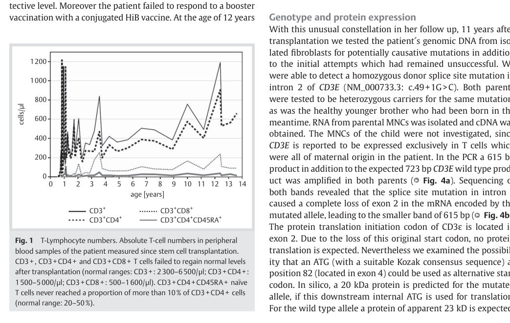

Immunodeficiency 18 is an ultra-rare autosomal recessive inborn error of immunity caused by biallelic loss-of-function variants in CD3E, the gene encoding the CD3epsilon invariant chain of the T-cell receptor (TCR)/CD3 complex. CD3epsilon is the chain around which the CD3 core is built: it partners both CD3gamma and CD3delta, so losing it removes two of the three signalling dimers from the pre-TCR and the mature TCR at once. Severity tracks how much functional CD3epsilon is left, and the reported spectrum runs from severe combined immunodeficiency to a considerably milder disorder. At the null end, complete absence of CD3epsilon abrogates human T-cell development: patients have no circulating T cells with normal B and NK cells - the T-B+NK+ pattern - and present in the first months of life with candidiasis, protracted diarrhoea, pneumonitis and failure to thrive, dying of disseminated viral infection unless transplanted. At the hypomorphic end, the child in whom the first CD3E mutations were found carried two different alleles that left an unstable chain and roughly a tenth of the normal surface receptor; that patient had T cells, and an immunodeficiency defined by unresponsiveness to receptor stimulation rather than by the absence of the compartment. Both ends are the same disorder and the same MONDO concept, and the entry is curated as a single graded entity rather than as a uniformly severe one. The boundary that matters clinically is with CD3gamma deficiency, the sibling chain of the same complex. That disorder does not block thymocyte development: patients keep normal T-cell numbers with reduced surface receptor, and their dominant problem is autoimmunity. CD3epsilon and CD3delta deficiency block development; CD3gamma deficiency does not. The one place the two disorders come close is the hypomorphic end of the CD3epsilon spectrum, where reduced rather than absent surface receptor is what is measured - and there the distinction rests on which gene is mutated, not on the flow cytometry. Where the developmental block sits in humans has never been shown directly. No thymus was available from the CD3epsilon-deficient family, so the arrest point is carried over from the mouse, where Cd3e inactivation stops thymocytes at the CD44-low CD25-positive double-negative stage.
Ask a research question about Immunodeficiency 18. OpenScientist will conduct autonomous deep research using the Disorder Mechanisms Knowledge Base and PubMed literature (typically 10-30 minutes).
Do not include personal health information in your question. Questions and results are cached in your browser's local storage.
Conditions with similar clinical presentations that must be differentiated from Immunodeficiency 18:
name: Immunodeficiency 18
creation_date: "2026-09-01T00:00:00Z"
category: Mendelian
synonyms:
- IMD18
- immunodeficiency type 18
- CD3-Epsilon deficiency
- CD3epsilon deficiency
- immunodeficiency 18, SCID variant
- immunodeficiency 18, Severe combined immunodeficiency variant
- T-B+NK+ severe combined immunodeficiency due to CD3E deficiency
description: >-
Immunodeficiency 18 is an ultra-rare autosomal recessive inborn error of
immunity caused by biallelic loss-of-function variants in CD3E, the gene
encoding the CD3epsilon invariant chain of the T-cell receptor (TCR)/CD3
complex. CD3epsilon is the chain around which the CD3 core is built: it
partners both CD3gamma and CD3delta, so losing it removes two of the three
signalling dimers from the pre-TCR and the mature TCR at once.
Severity tracks how much functional CD3epsilon is left, and the reported
spectrum runs from severe combined immunodeficiency to a considerably milder
disorder. At the null end, complete absence of CD3epsilon abrogates human
T-cell development: patients have no circulating T cells with normal B and NK
cells - the T-B+NK+ pattern - and present in the first months of life with
candidiasis, protracted diarrhoea, pneumonitis and failure to thrive, dying of
disseminated viral infection unless transplanted. At the hypomorphic end, the
child in whom the first CD3E mutations were found carried two different
alleles that left an unstable chain and roughly a tenth of the normal surface
receptor; that patient had T cells, and an immunodeficiency defined by
unresponsiveness to receptor stimulation rather than by the absence of the
compartment. Both ends are the same disorder and the same MONDO concept, and
the entry is curated as a single graded entity rather than as a uniformly
severe one.
The boundary that matters clinically is with CD3gamma deficiency, the sibling
chain of the same complex. That disorder does not block thymocyte development:
patients keep normal T-cell numbers with reduced surface receptor, and their
dominant problem is autoimmunity. CD3epsilon and CD3delta deficiency block
development; CD3gamma deficiency does not. The one place the two disorders
come close is the hypomorphic end of the CD3epsilon spectrum, where reduced
rather than absent surface receptor is what is measured - and there the
distinction rests on which gene is mutated, not on the flow cytometry.
Where the developmental block sits in humans has never been shown directly.
No thymus was available from the CD3epsilon-deficient family, so the arrest
point is carried over from the mouse, where Cd3e inactivation stops
thymocytes at the CD44-low CD25-positive double-negative stage.
disease_term:
preferred_term: immunodeficiency 18
term:
id: MONDO:0014278
label: immunodeficiency 18
parents:
- Severe combined immunodeficiency
- Inborn error of immunity
references:
- reference: PMID:15546002
title: Severe combined immunodeficiency caused by deficiency in either the delta or the epsilon subunit of CD3.
- reference: PMID:8490660
title: Independent mutations of the human CD3-epsilon gene resulting in a T cell receptor/CD3 complex immunodeficiency.
- reference: PMID:1370449
title: Structural analysis of low TCR-CD3 complex expression in T cells of an immunodeficient patient.
- reference: PMID:17277165
title: Differential biological role of CD3 chains revealed by human immunodeficiencies.
- reference: PMID:16264327
title: CD3 deficiencies.
- reference: PMID:28597365
title: A novel pathogenic frameshift variant of CD3E gene in two T-B+ NK+ SCID patients from Turkey.
- reference: PMID:24515816
title: "Successful haploidentical hematopoietic stem cell transplantation in a patient with SCID due to CD3ε deficiency: need for IgG-substitution 6 years later."
- reference: PMID:39287664
title: Sequence variants underlying severe combined immunodeficiency and leukocyte adhesion deficiency type 1 in six consanguineous families.
- reference: PMID:33040328
title: "Whole-exome sequencing of T(-) B(+) severe combined immunodeficiency in Egyptian infants, JAK3 predominance and novel variants."
- reference: PMID:32445296
title: Mutational landscape of severe combined immunodeficiency patients from Turkey.
- reference: PMID:36456361
title: "The diagnosis of severe combined immunodeficiency (SCID): The Primary Immune Deficiency Treatment Consortium (PIDTC) 2022 Definitions."
- reference: PMID:7588594
title: Altered T cell development in mice with a targeted mutation of the CD3-epsilon gene.
- reference: PMID:9885898
title: Expression of a CD3 epsilon transgene in CD3 epsilon(null) mice does not restore CD3 gamma and delta expression but efficiently rescues T cell development from a subpopulation of prothymocytes.
- reference: PMID:24899501
title: Membrane association of the CD3ε signaling domain is required for optimal T cell development and function.
- reference: PMID:35748970
title: "Human Inborn Errors of Immunity: 2022 Update on the Classification from the International Union of Immunological Societies Expert Committee."
classifications:
iuis_category:
classification_value: combined immunodeficiency
notes: >-
IUIS 2022 phenotypic classification of inborn errors of immunity, Table 1
(immunodeficiencies affecting cellular and humoral immunity). CD3E is
listed there among the T-B+NK+ severe combined immunodeficiencies,
alongside CD3D and CD3Z, and separately from the CD3G row, which the same
table records as having normal T-cell numbers with low TCR expression.
evidence:
- reference: PMID:35748970
reference_title: "Human Inborn Errors of Immunity: 2022 Update on the Classification from the International Union of Immunological Societies Expert Committee."
supports: SUPPORT
evidence_source: OTHER
snippet: >-
CD3 deficiency CD3E AR 186830 Very lowN ormalL ow Normal NK, no T cells
explanation: >-
The IUIS table row for CD3E, recording very low T cells, normal B cells,
low immunoglobulins and normal NK cells - the T-B+NK+ pattern that places
this disorder in the severe combined immunodeficiency table.
inheritance:
- name: Autosomal recessive inheritance
inheritance_term:
preferred_term: Autosomal recessive inheritance
term:
id: HP:0000007
label: Autosomal recessive inheritance
description: >-
Biallelic CD3E variants. Most reported patients are homozygous and born to
consanguineous parents; the original family was compound heterozygous, with
a different mutation inherited from each parent. Heterozygous carriers are
clinically unaffected, although one study found their T-cell receptor
excision circle counts to be measurably lower than a wild-type sibling's.
evidence:
- reference: PMID:8490660
reference_title: Independent mutations of the human CD3-epsilon gene resulting in a T cell receptor/CD3 complex immunodeficiency.
supports: SUPPORT
evidence_source: HUMAN_CLINICAL
snippet: >-
We now report that two independent CD3-epsilon gene mutations present in the parents have segregated in the patient, leading to defective CD3-epsilon chain synthesis and preventing normal association and membrane expression of the TCR/CD3 complex.
explanation: >-
The compound heterozygous transmission in the first reported family.
- reference: PMID:28597365
reference_title: A novel pathogenic frameshift variant of CD3E gene in two T-B+ NK+ SCID patients from Turkey.
supports: SUPPORT
evidence_source: HUMAN_CLINICAL
snippet: >-
In addition, heterozygous family members showed decreased TREC levels when compared with the wild-type sibling, indicating that carrying this variant in one allele does not cause immunodeficiency, but does effect T cell proliferation.
explanation: >-
Establishes that heterozygotes are unaffected while recording the
measurable gene-dosage effect on thymic output.
prevalence:
- population: Worldwide
measure_type: CASES_IN_LITERATURE
prevalence_class: ULTRA_RARE
notes: >-
No population estimate exists for CD3epsilon deficiency specifically. The
disorder is known from single families and from the occasional CD3E case
within larger severe combined immunodeficiency cohorts - two of 23 solved
patients in one Turkish series, one of twenty in an Egyptian series - and
those denominators are ascertainment-selected cohorts of SCID patients, not
populations, so no rate is recorded.
evidence:
- reference: PMID:32445296
reference_title: Mutational landscape of severe combined immunodeficiency patients from Turkey.
supports: SUPPORT
evidence_source: HUMAN_CLINICAL
snippet: >-
In total, 24 disease-causing variants (17 known and 7 novel) were identified in 23 patients in 9 different SCID genes: RAG1 (n = 5), RAG2 (n = 2), ADA (n = 3), DCLRE1C (n = 2), NHEJ1 (n = 2), CD3E (n = 2), IL2RG (n = 3), JAK3 (n = 4) and IL7R (n = 1).
explanation: >-
The CD3E share of one genetically solved severe combined immunodeficiency
cohort.
- reference: PMID:33040328
reference_title: "Whole-exome sequencing of T(-) B(+) severe combined immunodeficiency in Egyptian infants, JAK3 predominance and novel variants."
supports: SUPPORT
evidence_source: HUMAN_CLINICAL
snippet: >-
IL7Rα and CD3ε variants were found once, with a novel variant each.
explanation: >-
A second cohort in which CD3E accounted for a single patient, illustrating
how sparse the disorder is even within T-B+ SCID.
pathophysiology:
- name: Biallelic CD3E Loss-of-Function Variants
biological_scale: MOLECULAR
description: >-
Frameshift, nonsense and splice variants on both alleles. Reported changes
include a homozygous two-base deletion in exon 5 that truncates the chain in
its extracellular domain, a frameshift found in two Turkish siblings, a
homozygous splice-site change that abolishes the protein, and nonsense
alleles found in Egyptian and Pakistani families. Two hypomorphic alleles in
the original family behaved differently: they permitted some correctly
processed protein, which is why that patient was not a classical severe
combined immunodeficiency.
genes:
- preferred_term: CD3E
term:
id: hgnc:1674
label: CD3E
evidence:
- reference: PMID:15546002
reference_title: Severe combined immunodeficiency caused by deficiency in either the delta or the epsilon subunit of CD3.
supports: SUPPORT
evidence_source: HUMAN_CLINICAL
snippet: >-
A homozygous 2-bp deletion at nucleotide 128 in exon 5 of CD3E was identified in this patient.
explanation: >-
The truncating allele in the first family recognised as CD3epsilon
deficiency.
- reference: PMID:28597365
reference_title: A novel pathogenic frameshift variant of CD3E gene in two T-B+ NK+ SCID patients from Turkey.
supports: SUPPORT
evidence_source: HUMAN_CLINICAL
snippet: >-
We found a novel deletion in the CD3E gene (NM000733.3:p.L58Hfs*9) in two T-B+ NK+ patients.
explanation: >-
A second, independent frameshift allele with the same T-B+NK+ consequence.
downstream:
- target: Loss of the CD3epsilon Chain
description: >-
Truncating and splice alleles abolish production of a usable CD3epsilon
polypeptide.
causal_link_type: DIRECT
evidence:
- reference: PMID:24515816
reference_title: "Successful haploidentical hematopoietic stem cell transplantation in a patient with SCID due to CD3ε deficiency: need for IgG-substitution 6 years later."
supports: SUPPORT
evidence_source: HUMAN_CLINICAL
snippet: >-
In a retrospective genetic work up 11 years after SCT, a homozygous splice site mutation in CD3E was identified resulting in the loss of CD3ε protein.
explanation: >-
Links a specific CD3E genotype directly to absence of the protein.
- target: Residual Unstable CD3epsilon in Partial Deficiency
description: >-
Hypomorphic alleles produce an abnormally sized, unstable transcript and a
correspondingly reduced amount of chain rather than none at all.
causal_link_type: DIRECT
evidence:
- reference: PMID:1370449
reference_title: Structural analysis of low TCR-CD3 complex expression in T cells of an immunodeficient patient.
supports: SUPPORT
evidence_source: IN_VITRO
snippet: >-
Northern blot analysis revealed normal levels of normal-size TCR beta and CD3 gamma, delta gene-specific mRNAs and decreased levels of TCR alpha mARN; CD3 epsilon gene transcripts were of abnormal size and present in lower than normal amounts.
explanation: >-
The transcript-level evidence that the hypomorphic genotype reduces
rather than abolishes CD3epsilon.
- name: Loss of the CD3epsilon Chain
biological_scale: MOLECULAR
description: >-
Complete absence of the CD3epsilon polypeptide. Because CD3epsilon is the
common partner of both CD3gamma and CD3delta, its loss takes out the
gamma-epsilon and delta-epsilon dimers together, which is why it is more
damaging than loss of either partner alone. In mouse thymocytes, disrupting
the gene also strongly suppresses expression of CD3gamma and CD3delta,
although that turned out to reflect the arrest rather than transcriptional
control by CD3epsilon itself.
evidence:
- reference: PMID:8490660
reference_title: Independent mutations of the human CD3-epsilon gene resulting in a T cell receptor/CD3 complex immunodeficiency.
supports: SUPPORT
evidence_source: HUMAN_CLINICAL
snippet: >-
The T-cell receptor (TCR) is composed of two glycoproteins (alpha and beta or gamma and delta) associated with four invariant polypeptides (CD3-gamma, delta, epsilon and zeta). The majority of TCR/CD3 complexes contain six polypeptide chains, and although there is some flexibility in the complex subunit stoichiometry the CD3-epsilon chain is central to CD3 core assembly and full complex formation.
explanation: >-
States the structural position of CD3epsilon that makes its loss
consequential for the whole complex.
downstream:
- target: Failure of pre-TCR and TCR Complex Assembly
description: >-
Without CD3epsilon neither invariant dimer can form, so the receptor
cannot be assembled or exported.
causal_link_type: DIRECT
evidence:
- reference: PMID:8490660
reference_title: Independent mutations of the human CD3-epsilon gene resulting in a T cell receptor/CD3 complex immunodeficiency.
supports: SUPPORT
evidence_source: HUMAN_CLINICAL
snippet: >-
We now report that two independent CD3-epsilon gene mutations present in the parents have segregated in the patient, leading to defective CD3-epsilon chain synthesis and preventing normal association and membrane expression of the TCR/CD3 complex.
explanation: >-
Links defective CD3epsilon synthesis directly to failed assembly and
surface expression of the complex.
- name: Residual Unstable CD3epsilon in Partial Deficiency
biological_scale: MOLECULAR
description: >-
The hypomorphic branch. Two CD3E alleles that reduce but do not abolish
production of the chain leave a T-cell compartment that exists but carries
about a tenth of the normal surface receptor. This is the mechanistic basis
of the mild end of the spectrum and the reason severity in this disorder is
not uniform. It is curated as its own node because it produces a different
downstream chain from the null branch: attenuated signalling in T cells that
are present, rather than absence of the cells.
evidence:
- reference: PMID:1370449
reference_title: Structural analysis of low TCR-CD3 complex expression in T cells of an immunodeficient patient.
supports: SUPPORT
evidence_source: IN_VITRO
snippet: >-
These findings suggest that this defect in T cell receptor-CD3 expression involves a mutation in the CD3 epsilon gene leading to the synthesis of an abnormal and unstable CD3 epsilon subunit.
explanation: >-
Identifies the lesion as an unstable chain rather than an absent one.
downstream:
- target: Reduced Surface TCR/CD3 with Impaired T-Cell Activation
description: >-
An unstable chain assembles inefficiently, so fewer complexes reach the
surface and those T cells that do develop respond poorly to receptor
engagement.
causal_link_type: DIRECT
evidence:
- reference: PMID:1370449
reference_title: Structural analysis of low TCR-CD3 complex expression in T cells of an immunodeficient patient.
supports: SUPPORT
evidence_source: HUMAN_CLINICAL
snippet: >-
We report on another immunodeficient patient whose T lymphocytes express the T cell receptor at one-tenth of normal fluorescence intensity and are not triggered to proliferate in vitro by anti-CD3 or anti-CD2 antibodies.
explanation: >-
The measured receptor density and the functional consequence in the same
patient.
- name: Failure of pre-TCR and TCR Complex Assembly
biological_scale: MOLECULAR
description: >-
The pre-TCR (pre-TCRalpha with TCRbeta) and the mature alpha-beta TCR both
reach the surface only as complexes with the CD3gamma-epsilon,
CD3delta-epsilon and zeta-zeta dimers. Losing CD3epsilon removes two of the
three, and the receptor is neither assembled nor exported. Note that TCRbeta
gene rearrangement itself proceeds normally, so the defect is in receptor
assembly and signalling rather than in recombination.
protein_complexes:
- preferred_term: T cell receptor complex
modifier: ABSENT
term:
id: GO:0042101
label: T cell receptor complex
evidence:
- reference: PMID:7588594
reference_title: Altered T cell development in mice with a targeted mutation of the CD3-epsilon gene.
supports: SUPPORT
evidence_source: MODEL_ORGANISM
snippet: >-
CD3-epsilon-deficient thymocytes do rearrange their T cell receptor (TCR) beta gene segments and produce low levels of full-length TCR beta transcripts.
explanation: >-
Establishes that recombination is intact, locating the lesion downstream at
receptor assembly and signalling.
downstream:
- target: Blocked Pre-TCR Signaling at Beta-Selection
description: >-
The pre-TCR cannot transmit the survival, proliferation and progression
signal that reports a productive TCRbeta rearrangement.
causal_link_type: DIRECT
evidence:
- reference: PMID:15546002
reference_title: Severe combined immunodeficiency caused by deficiency in either the delta or the epsilon subunit of CD3.
supports: SUPPORT
evidence_source: MODEL_ORGANISM
snippet: >-
showing that CD3ε is essential for transduction of the PreTα/TCRβ receptor survival, proliferation, and progression signals
explanation: >-
Names the specific pre-TCR signal that requires CD3epsilon.
- name: Blocked Pre-TCR Signaling at Beta-Selection
biological_scale: CELLULAR
description: >-
Beta-selection is the checkpoint at which a double-negative thymocyte that
has made a productive TCRbeta rearrangement is licensed to survive, divide
and proceed to the double-positive stage. The pre-TCR is the sensor, and
without CD3epsilon it cannot signal, so the checkpoint reads every
thymocyte as having failed.
biological_processes:
- preferred_term: T cell receptor signaling pathway
modifier: ABSENT
term:
id: GO:0050852
label: T cell receptor signaling pathway
cell_types:
- preferred_term: double negative thymocyte
term:
id: CL:0002489
label: double negative thymocyte
evidence:
- reference: PMID:7588594
reference_title: Altered T cell development in mice with a targeted mutation of the CD3-epsilon gene.
supports: SUPPORT
evidence_source: MODEL_ORGANISM
snippet: >-
Taken together, these results establish an essential role for the CD3-epsilon gene products during T cell development and further suggest that the CD3-epsilon polypeptides start to exert their function as part of a pre-TCR through which CD44-/lowCD25+ triple-negative cells monitor the occurrence of productive TCR beta gene rearrangements.
explanation: >-
Places the requirement for CD3epsilon precisely at pre-TCR surveillance of
beta-selection.
downstream:
- target: Arrest of Thymocyte Development
description: >-
A thymocyte that cannot pass beta-selection does not progress to the
double-positive stage.
causal_link_type: DIRECT
evidence:
- reference: PMID:7588594
reference_title: Altered T cell development in mice with a targeted mutation of the CD3-epsilon gene.
supports: SUPPORT
evidence_source: MODEL_ORGANISM
snippet: >-
In the absence of intact CD3-epsilon subunit, thymocytes do not progress beyond the CD44-/lowCD25+ triple-negative stage and appear to be arrested at the very same developmental control point as RAG-deficient thymocytes.
explanation: >-
The measured arrest point in the model that the human arrest is inferred
from.
- name: Arrest of Thymocyte Development
biological_scale: CELLULAR
description: >-
Thymopoiesis stops. In the mouse the arrest is at the CD44-low CD25-positive
double-negative stage, phenocopying RAG deficiency despite intact
rearrangement. In humans the stage has never been established directly,
because no thymus was available from the CD3epsilon-deficient family; what
is established is the outcome, that absence of CD3epsilon abrogates human
T-cell development altogether.
biological_processes:
- preferred_term: T cell differentiation in thymus
modifier: ABSENT
term:
id: GO:0033077
label: T cell differentiation in thymus
cell_types:
- preferred_term: thymocyte
term:
id: CL:0000893
label: thymocyte
evidence:
- reference: PMID:15546002
reference_title: Severe combined immunodeficiency caused by deficiency in either the delta or the epsilon subunit of CD3.
supports: SUPPORT
evidence_source: HUMAN_CLINICAL
snippet: >-
These observations show that an absence of CD3ε or CD3δ completely abrogates human T cell development.
explanation: >-
The human-level conclusion, stated without committing to an arrest stage.
- reference: PMID:15546002
reference_title: Severe combined immunodeficiency caused by deficiency in either the delta or the epsilon subunit of CD3.
supports: NO_EVIDENCE
evidence_source: HUMAN_CLINICAL
snippet: >-
It was not possible to assess at what stage the CD3 ε deficiency blocked T cell differentiation in patients from family I, as no thymus material was available.
explanation: >-
Records that the human arrest stage was not determined; the mouse stage is
an inference, not an observation in patients.
downstream:
- target: Absent Peripheral T Cells
description: >-
No thymocyte completes development, so no mature T cell reaches the
periphery.
causal_link_type: DIRECT
evidence:
- reference: PMID:15546002
reference_title: Severe combined immunodeficiency caused by deficiency in either the delta or the epsilon subunit of CD3.
supports: SUPPORT
evidence_source: HUMAN_CLINICAL
snippet: >-
We investigated the molecular mechanism underlying a severe combined immunodeficiency characterized by the selective and complete absence of T cells.
explanation: >-
The peripheral consequence in the patients, described as selective and
complete.
- name: Absent Peripheral T Cells
biological_scale: ORGANISM
description: >-
No circulating CD3-positive T cells, with normal or high B-cell counts and
present NK cells. The selectivity is the point: only the T lineage requires
the pre-TCR, so B and NK development proceed normally, and the resulting
T-B+NK+ pattern is what a diagnostic flow panel sees. Thymic output measured
as T-cell receptor excision circles is undetectable, which is what makes the
disorder visible to newborn screening.
cell_types:
- preferred_term: T cell
modifier: ABSENT
term:
id: CL:0000084
label: T cell
evidence:
- reference: PMID:28597365
reference_title: A novel pathogenic frameshift variant of CD3E gene in two T-B+ NK+ SCID patients from Turkey.
supports: SUPPORT
evidence_source: HUMAN_CLINICAL
snippet: >-
T cell receptor excision circle (TREC) and kappa-deleting recombination excision circle (KREC) analyses were performed for T and B cell maturation. TRECs were not detected in both patients and the KREC copy numbers were similar to the other family members.
explanation: >-
Absent thymic output alongside normal B-cell output, measured in the same
patients.
downstream:
- target: Failure of Cellular Immunity
description: >-
Without T cells there is no cell-mediated defence against viral, fungal
and opportunistic pathogens.
causal_link_type: DIRECT
evidence:
- reference: PMID:16264327
reference_title: CD3 deficiencies.
supports: SUPPORT
evidence_source: HUMAN_CLINICAL
snippet: >-
Homozygous mutations in CD3D and CD3E genes lead to a complete block in T-cell development and thus to an early-onset severe combined immunodeficiency phenotype. Thymic studies have shown that the defect in T-cell development occurs at the transition between 'double-negative' and 'double-positive' thymocytes. These results contrast with the partial T-cell immunodeficiency caused by a deficiency in CD3G.
explanation: >-
States the causal chain from the developmental block to the severe
combined immunodeficiency phenotype.
- target: Loss of T-Cell Help to B Cells
description: >-
B cells are present and numerically normal but have no T-cell help, so
they cannot mount switched, specific antibody responses.
causal_link_type: DIRECT
evidence:
- reference: PMID:24515816
reference_title: "Successful haploidentical hematopoietic stem cell transplantation in a patient with SCID due to CD3ε deficiency: need for IgG-substitution 6 years later."
supports: SUPPORT
evidence_source: HUMAN_CLINICAL
snippet: >-
The loss of B-cell function as observed in the patient was reflected by a lack of switched memory B cells. To rule out a primary role of CD3ε in B-cell function we studied expression of CD3E in B-cells which was found not to be expressed.
explanation: >-
Establishes that the humoral defect is secondary to lost T-cell help
rather than a B-cell-intrinsic role for CD3epsilon, which the authors
excluded by showing the gene is not expressed in B cells.
- name: Reduced Surface TCR/CD3 with Impaired T-Cell Activation
biological_scale: CELLULAR
description: >-
The hypomorphic outcome. T cells develop and populate the periphery, but
carry roughly a tenth of the normal density of surface receptor and cannot
be triggered to proliferate through CD3 or CD2. The immunodeficiency here is
functional rather than numerical, and it is the reason this disorder cannot
be described as uniformly a severe combined immunodeficiency.
protein_complexes:
- preferred_term: alpha-beta T cell receptor complex
modifier: DECREASED
term:
id: GO:0042105
label: alpha-beta T cell receptor complex
cell_types:
- preferred_term: T cell
term:
id: CL:0000084
label: T cell
evidence:
- reference: PMID:1370449
reference_title: Structural analysis of low TCR-CD3 complex expression in T cells of an immunodeficient patient.
supports: SUPPORT
evidence_source: HUMAN_CLINICAL
snippet: >-
We report on another immunodeficient patient whose T lymphocytes express the T cell receptor at one-tenth of normal fluorescence intensity and are not triggered to proliferate in vitro by anti-CD3 or anti-CD2 antibodies.
explanation: >-
The defining measurements of the hypomorphic phenotype: reduced receptor
density with preserved cells, and failure of receptor-driven proliferation.
downstream:
- target: Failure of Cellular Immunity
description: >-
T cells that cannot be activated through their receptor cannot mount an
effective cellular response, even though they are present.
causal_link_type: DIRECT
evidence:
- reference: PMID:1370449
reference_title: Structural analysis of low TCR-CD3 complex expression in T cells of an immunodeficient patient.
supports: SUPPORT
evidence_source: HUMAN_CLINICAL
snippet: >-
We report on another immunodeficient patient whose T lymphocytes express the T cell receptor at one-tenth of normal fluorescence intensity and are not triggered to proliferate in vitro by anti-CD3 or anti-CD2 antibodies.
explanation: >-
The same measurement links the receptor deficit to functional
unresponsiveness in a patient described as immunodeficient.
- name: Failure of Cellular Immunity
biological_scale: ORGANISM
description: >-
The clinical endpoint of both branches. In the null form it is
catastrophic: candidiasis, protracted diarrhoea, pneumonitis and failure to
thrive in the first months, and death from disseminated cytomegalovirus or
adenovirus without immune reconstitution. In the hypomorphic form it is a
milder susceptibility to infection in a child who has T cells.
evidence:
- reference: PMID:33040328
reference_title: "Whole-exome sequencing of T(-) B(+) severe combined immunodeficiency in Egyptian infants, JAK3 predominance and novel variants."
supports: SUPPORT
evidence_source: HUMAN_CLINICAL
snippet: >-
All patients had the classic clinical picture for SCID, including failure to thrive (n = 20), oral candidiasis (n = 17), persistent diarrhea (n = 14), pneumonia (n = 13), napkin dermatitis (n = 10), skin rash (n = 7), otitis media (n = 3) and meningitis (n = 2).
explanation: >-
The clinical picture of the T-B+ SCID cohort in which a CD3E patient was
identified.
- name: Loss of T-Cell Help to B Cells
biological_scale: ORGANISM
description: >-
B cells are numerically normal but functionally unsupported. IgM is
detectable, IgA is not, and IgG falls once maternal antibody wanes. The
clearest demonstration comes from a transplanted patient in whom only the
T-cell lineage was of donor origin: humoral immunity was adequate for six
years and then failed, with loss of switched memory B cells, as T-helper
support declined.
biological_processes:
- preferred_term: isotype switching
modifier: DECREASED
term:
id: GO:0045190
label: isotype switching
cell_types:
- preferred_term: B cell
term:
id: CL:0000236
label: B cell
evidence:
- reference: PMID:15546002
reference_title: Severe combined immunodeficiency caused by deficiency in either the delta or the epsilon subunit of CD3.
supports: SUPPORT
evidence_source: HUMAN_CLINICAL
snippet: >-
IgA was not detected in the serum of any of the patients.
explanation: >-
The isotype-specific antibody deficit accompanying preserved B-cell
numbers.
- reference: PMID:24515816
reference_title: "Successful haploidentical hematopoietic stem cell transplantation in a patient with SCID due to CD3ε deficiency: need for IgG-substitution 6 years later."
supports: SUPPORT
evidence_source: HUMAN_CLINICAL
snippet: >-
At 6 years after SCT the patient developed signs of humoral immunodeficiency, requiring regular substitution of IgG.
explanation: >-
The delayed humoral failure in a split-chimerism patient, which is the
natural experiment showing the antibody defect is T-cell dependent.
phenotypes:
- name: Severe combined immunodeficiency
category: Immunologic
diagnostic: true
description: >-
The presentation of the complete-deficiency form: profound T-cell deficiency
with preserved humoral cell numbers, manifesting in the first months of
life and fatal without immune reconstitution.
phenotype_term:
preferred_term: Severe combined immunodeficiency
term:
id: HP:0004430
label: Severe combined immunodeficiency
evidence:
- reference: PMID:16264327
reference_title: CD3 deficiencies.
supports: SUPPORT
evidence_source: HUMAN_CLINICAL
snippet: >-
Two new severe combined immunodeficiency conditions have been reported as a consequence of either CD3D or CD3E deficiency.
explanation: >-
Names CD3E deficiency as a severe combined immunodeficiency condition.
- reference: PMID:17277165
reference_title: Differential biological role of CD3 chains revealed by human immunodeficiencies.
supports: SUPPORT
evidence_source: HUMAN_CLINICAL
snippet: >-
In contrast, all reported human complete CD3delta (or CD3epsilon) deficiencies are in infants with life-threatening SCID and very severe alphabeta and gammadelta T lymphocytopenia.
explanation: >-
States that the complete deficiencies, as reported at that time, were
uniformly SCID in infancy.
- name: Absent circulating T cells with normal B and NK cells
category: Immunologic
diagnostic: true
description: >-
The T-B+NK+ flow cytometry pattern. In complete deficiency no CD3-positive
cells are detected, while B-cell counts sit at or above the upper limit of
normal and NK cells are present. This pattern narrows the differential to a
handful of genes and is what a SCID panel is chosen on.
phenotype_term:
preferred_term: Absent circulating T cells
term:
id: HP:0025805
label: Absent circulating T cells
evidence:
- reference: PMID:35748970
reference_title: "Human Inborn Errors of Immunity: 2022 Update on the Classification from the International Union of Immunological Societies Expert Committee."
supports: SUPPORT
evidence_source: OTHER
snippet: >-
CD3 deficiency CD3E AR 186830 Very lowN ormalL ow Normal NK, no T cells
explanation: >-
The IUIS row recording very low T cells with normal B and NK cells for
CD3E.
- reference: PMID:28597365
reference_title: A novel pathogenic frameshift variant of CD3E gene in two T-B+ NK+ SCID patients from Turkey.
supports: SUPPORT
evidence_source: HUMAN_CLINICAL
snippet: >-
We found a novel deletion in the CD3E gene (NM000733.3:p.L58Hfs*9) in two T-B+ NK+ patients.
explanation: >-
Records the T-B+NK+ classification of two genetically confirmed patients.
- name: Reduced surface TCR/CD3 expression with preserved T cells
category: Immunologic
diagnostic: true
description: >-
The alternative laboratory presentation, seen in partial CD3epsilon
deficiency: T cells are present but express about a tenth of the normal
surface receptor and cannot be triggered through it. This is the finding
that superficially resembles CD3gamma deficiency, and the reason a
reduced-receptor result should not be taken to exclude CD3E.
phenotype_term:
preferred_term: Abnormal T cell physiology
term:
id: HP:0011840
label: Abnormal T cell physiology
evidence:
- reference: PMID:1370449
reference_title: Structural analysis of low TCR-CD3 complex expression in T cells of an immunodeficient patient.
supports: SUPPORT
evidence_source: HUMAN_CLINICAL
snippet: >-
We report on another immunodeficient patient whose T lymphocytes express the T cell receptor at one-tenth of normal fluorescence intensity and are not triggered to proliferate in vitro by anti-CD3 or anti-CD2 antibodies.
explanation: >-
The measured receptor density and the failed activation response that
define this presentation.
- name: Hypogammaglobulinemia
category: Immunologic
description: >-
IgG falls once maternal antibody wanes and IgA is undetectable, while IgM
persists. The defect is secondary to absent T-cell help rather than
intrinsic to the B cells, which are present in normal or increased numbers.
phenotype_term:
preferred_term: Decreased circulating immunoglobulin concentration
term:
id: HP:0004313
label: Decreased circulating immunoglobulin concentration
evidence:
- reference: PMID:15546002
reference_title: Severe combined immunodeficiency caused by deficiency in either the delta or the epsilon subunit of CD3.
supports: SUPPORT
evidence_source: HUMAN_CLINICAL
snippet: >-
IgA was not detected in the serum of any of the patients.
explanation: >-
The measured immunoglobulin deficit.
- reference: PMID:35748970
reference_title: "Human Inborn Errors of Immunity: 2022 Update on the Classification from the International Union of Immunological Societies Expert Committee."
supports: SUPPORT
evidence_source: OTHER
snippet: >-
CD3 deficiency CD3E AR 186830 Very lowN ormalL ow Normal NK, no T cells
explanation: >-
The IUIS row records low serum immunoglobulins alongside the T-B+NK+
pattern.
- name: Recurrent opportunistic infection
category: Immunologic
description: >-
Candidiasis, pneumonitis, protracted diarrhoea and disseminated viral
infection. Disseminated cytomegalovirus and adenovirus were the causes of
death in the first recognised CD3epsilon-deficient family.
phenotype_term:
preferred_term: Recurrent opportunistic infections
term:
id: HP:0005390
label: Recurrent opportunistic infections
evidence:
- reference: PMID:33040328
reference_title: "Whole-exome sequencing of T(-) B(+) severe combined immunodeficiency in Egyptian infants, JAK3 predominance and novel variants."
supports: SUPPORT
evidence_source: HUMAN_CLINICAL
snippet: >-
All patients had the classic clinical picture for SCID, including failure to thrive (n = 20), oral candidiasis (n = 17), persistent diarrhea (n = 14), pneumonia (n = 13), napkin dermatitis (n = 10), skin rash (n = 7), otitis media (n = 3) and meningitis (n = 2).
explanation: >-
The infection spectrum in the T-B+ SCID cohort containing a CD3E patient.
- name: Failure to thrive
category: Growth
description: >-
Growth failure in infancy, secondary to persistent infection and
enteropathy rather than to a primary growth defect.
phenotype_term:
preferred_term: Failure to thrive
term:
id: HP:0001508
label: Failure to thrive
evidence:
- reference: PMID:33040328
reference_title: "Whole-exome sequencing of T(-) B(+) severe combined immunodeficiency in Egyptian infants, JAK3 predominance and novel variants."
supports: SUPPORT
evidence_source: HUMAN_CLINICAL
snippet: >-
All patients had the classic clinical picture for SCID, including failure to thrive (n = 20), oral candidiasis (n = 17), persistent diarrhea (n = 14), pneumonia (n = 13), napkin dermatitis (n = 10), skin rash (n = 7), otitis media (n = 3) and meningitis (n = 2).
explanation: >-
Records failure to thrive in every patient of the cohort.
- name: Oral candidiasis
category: Infectious
description: >-
Mucosal candidal infection of the mouth, one of the presenting infections in
the first recognised CD3epsilon-deficient family and in the T-B+ SCID cohort
below. The source reports "oral candidiasis" without stating duration; the
bound HPO term is the chronic one, which is the closest available and the
same binding this KB uses for an equivalent cohort count elsewhere.
phenotype_term:
preferred_term: Oral candidiasis
term:
id: HP:0009098
label: Chronic oral candidiasis
notes: >-
No frequency band is asserted. The count comes from a T-B+ SCID cohort in
which JAK3 predominates and CD3E accounts for one patient, so the cohort
proportion is a frequency for that mixed genotype set and not for this
disease. The numerator and denominator are stated in the snippet.
evidence:
- reference: PMID:33040328
reference_title: "Whole-exome sequencing of T(-) B(+) severe combined immunodeficiency in Egyptian infants, JAK3 predominance and novel variants."
supports: SUPPORT
evidence_source: HUMAN_CLINICAL
snippet: >-
All patients had the classic clinical picture for SCID, including failure to thrive (n = 20), oral candidiasis (n = 17), persistent diarrhea (n = 14), pneumonia (n = 13), napkin dermatitis (n = 10), skin rash (n = 7), otitis media (n = 3) and meningitis (n = 2).
explanation: >-
Gives oral candidiasis in 17 of 20 patients in the T-B+ SCID cohort that
includes a CD3E patient.
- name: Persistent diarrhea
category: Gastrointestinal
description: >-
Protracted diarrhoea, named in the original CD3epsilon-deficient family
alongside candidiasis and pneumonitis, and one of the infections driving the
failure to thrive curated below.
phenotype_term:
preferred_term: Persistent diarrhea
term:
id: HP:0002014
label: Diarrhea
temporality: CHRONIC
notes: >-
No frequency band is asserted. The count comes from a T-B+ SCID cohort in
which JAK3 predominates and CD3E accounts for one patient, so the cohort
proportion is a frequency for that mixed genotype set and not for this
disease. The numerator and denominator are stated in the snippet.
evidence:
- reference: PMID:33040328
reference_title: "Whole-exome sequencing of T(-) B(+) severe combined immunodeficiency in Egyptian infants, JAK3 predominance and novel variants."
supports: SUPPORT
evidence_source: HUMAN_CLINICAL
snippet: >-
All patients had the classic clinical picture for SCID, including failure to thrive (n = 20), oral candidiasis (n = 17), persistent diarrhea (n = 14), pneumonia (n = 13), napkin dermatitis (n = 10), skin rash (n = 7), otitis media (n = 3) and meningitis (n = 2).
explanation: >-
Gives persistent diarrhea in 14 of 20 patients in the T-B+ SCID cohort that
includes a CD3E patient.
- name: Pneumonia
category: Respiratory
description: >-
Pneumonitis, including the interstitial pneumonitis typical of Pneumocystis
jirovecii in a T-cell-null infant. Named in the original CD3epsilon-deficient
family and counted in the cohort below.
phenotype_term:
preferred_term: Pneumonia
term:
id: HP:0002090
label: Pneumonia
notes: >-
No frequency band is asserted. The count comes from a T-B+ SCID cohort in
which JAK3 predominates and CD3E accounts for one patient, so the cohort
proportion is a frequency for that mixed genotype set and not for this
disease. The numerator and denominator are stated in the snippet.
evidence:
- reference: PMID:33040328
reference_title: "Whole-exome sequencing of T(-) B(+) severe combined immunodeficiency in Egyptian infants, JAK3 predominance and novel variants."
supports: SUPPORT
evidence_source: HUMAN_CLINICAL
snippet: >-
All patients had the classic clinical picture for SCID, including failure to thrive (n = 20), oral candidiasis (n = 17), persistent diarrhea (n = 14), pneumonia (n = 13), napkin dermatitis (n = 10), skin rash (n = 7), otitis media (n = 3) and meningitis (n = 2).
explanation: >-
Gives pneumonia in 13 of 20 patients in the T-B+ SCID cohort that includes a
CD3E patient.
genetic:
- name: CD3E
association: Causal biallelic variant
gene_term:
preferred_term: CD3E
term:
id: hgnc:1674
label: CD3E
notes: >-
The reported allelic spectrum is small and largely private to individual
families: a homozygous two-base deletion in exon 5, a homozygous frameshift
(p.L58Hfs*9) in two Turkish siblings, a homozygous splice-site change
abolishing the protein, and nonsense alleles including p.Trp151* in a
Pakistani family and one reported in an Egyptian cohort. The genotype does
appear to set the severity in this disorder, unlike in CD3gamma deficiency:
truncating and splice alleles that abolish the chain give severe combined
immunodeficiency, while the two hypomorphic alleles in the original family
left residual protein and a milder disease. That inference rests on a
handful of families and has never been tested systematically.
evidence:
- reference: PMID:39287664
reference_title: Sequence variants underlying severe combined immunodeficiency and leukocyte adhesion deficiency type 1 in six consanguineous families.
supports: SUPPORT
evidence_source: HUMAN_CLINICAL
snippet: >-
This included four novel nonsense variants in CD70 p.(Thr126Profs*33), CD3e p.(Trp151*), IL7R p.(Val138Ilefs*10), and ITGB2 p.(Ser627Valfs*61), and one previously reported in ITGB2 p.(Cys62*).
explanation: >-
A further private nonsense allele, illustrating the family-by-family
character of the spectrum.
- reference: PMID:1370449
reference_title: Structural analysis of low TCR-CD3 complex expression in T cells of an immunodeficient patient.
supports: SUPPORT
evidence_source: IN_VITRO
snippet: >-
These findings suggest that this defect in T cell receptor-CD3 expression involves a mutation in the CD3 epsilon gene leading to the synthesis of an abnormal and unstable CD3 epsilon subunit.
explanation: >-
The hypomorphic end of the allelic spectrum, where residual unstable
protein is made.
environmental: []
treatments:
- name: Protective isolation and anti-infectious prophylaxis
description: >-
Supportive care that keeps a T-cell-null infant alive until immune
reconstitution: protective isolation, antimicrobial prophylaxis, and
avoidance of the exposures a patient with no T cells cannot survive. It is
a bridge to transplantation rather than a treatment of the lesion, and the
entry curates it as such because in this disease the interval before
transplant is where patients are lost.
treatment_term:
preferred_term: Supportive care
term:
id: NCIT:C15747
label: Supportive Care
notes: >-
`therapeutic_modality` is deliberately absent. The bundle spans a
non-pharmacological measure (isolation) and drug prophylaxis, and
`TherapeuticModalityEnum` is single-valued, so any choice would misdescribe
half of it. Individual prophylactic agents are not curated separately
because no cached source names a regimen given to a CD3epsilon-deficient
patient.
target_mechanisms:
- target: Failure of Cellular Immunity
treatment_effect: MODULATES
description: >-
Reduces the pathogen exposure that the absent T-cell compartment cannot
answer. It does not restore the compartment, so the mechanism node is
unchanged; what changes is the burden placed on it.
evidence:
- reference: PMID:36456361
reference_title: "The diagnosis of severe combined immunodeficiency (SCID): The Primary Immune Deficiency Treatment Consortium (PIDTC) 2022 Definitions."
supports: SUPPORT
evidence_source: OTHER
snippet: >-
strict isolation and anti-infectious prophylaxis until improvements in immunity are achieved
explanation: >-
States the supportive-care approach for severe combined immunodeficiency
in the interval before immune reconstitution.
evidence:
- reference: PMID:36456361
reference_title: "The diagnosis of severe combined immunodeficiency (SCID): The Primary Immune Deficiency Treatment Consortium (PIDTC) 2022 Definitions."
supports: SUPPORT
evidence_source: OTHER
snippet: >-
strict isolation and anti-infectious prophylaxis until improvements in immunity are achieved
explanation: >-
Supports curating protective isolation and prophylaxis as the standard
holding measure before definitive treatment.
- name: Allogeneic haematopoietic stem cell transplantation
description: >-
The only definitive treatment for the complete-deficiency form. A patient
with a homozygous CD3E splice-site variant transplanted haploidentically
from his mother developed normal T- and B-cell immunity and was followed for
fifteen years. Engraftment was confined to the T-cell lineage, T-cell counts
never reached normal, and naive T cells stayed low, which is the pattern
that later allowed humoral immunity to fail.
therapeutic_modality: CELL_THERAPY
treatment_term:
preferred_term: hematopoietic cell transplantation
term:
id: NCIT:C15431
label: Hematopoietic Cell Transplantation
target_mechanisms:
- target: Arrest of Thymocyte Development
treatment_effect: BYPASSES
description: >-
Donor progenitors carry wild-type CD3E, so thymopoiesis proceeds from
donor-derived precursors; the patient's own precursors remain arrested.
evidence:
- reference: PMID:24515816
reference_title: "Successful haploidentical hematopoietic stem cell transplantation in a patient with SCID due to CD3ε deficiency: need for IgG-substitution 6 years later."
supports: SUPPORT
evidence_source: HUMAN_CLINICAL
snippet: >-
Despite conditioning donor cell engraftment was confined to T cells, while all other blood cell lineages remained of patient origin (split chimerism). In spite of normal functions, T-cell numbers never reached normal levels and naïve CD45+RA+ T-cells remained low.
explanation: >-
Documents that only the T lineage is reconstituted, which is exactly the
compartment the arrest affects, and that the reconstitution is partial.
evidence:
- reference: PMID:24515816
reference_title: "Successful haploidentical hematopoietic stem cell transplantation in a patient with SCID due to CD3ε deficiency: need for IgG-substitution 6 years later."
supports: SUPPORT
evidence_source: HUMAN_CLINICAL
snippet: >-
We report on a patient with SCID due to CD3ε deficiency treated by HLA-haploidentical stem cell transplantation (SCT) (donor: mother) 15 years ago which resulted in development of normal T- and B-cell immunity.
explanation: >-
The one long-term transplant outcome reported for this genotype.
- name: Immunoglobulin replacement therapy
description: >-
Regular IgG infusion for the antibody deficiency. It is needed before
transplantation and, in the one long-term survivor, became necessary again
six years afterwards when T-helper support for the patient's own B cells
declined.
therapeutic_modality: PROTEIN_REPLACEMENT
treatment_term:
preferred_term: Pharmacotherapy
term:
id: NCIT:C15986
label: Pharmacotherapy
therapeutic_agent:
- preferred_term: therapeutic immune globulin
term:
id: NCIT:C2701
label: Therapeutic Immune Globulin
target_phenotypes:
- preferred_term: Decreased circulating immunoglobulin concentration
term:
id: HP:0004313
label: Decreased circulating immunoglobulin concentration
target_mechanisms:
- target: Loss of T-Cell Help to B Cells
treatment_effect: BYPASSES
description: >-
Replacement antibody substitutes for the switched, specific immunoglobulin
the patient's unhelped B cells cannot make; the T-cell defect that causes
the humoral failure is untouched.
evidence:
- reference: PMID:24515816
reference_title: "Successful haploidentical hematopoietic stem cell transplantation in a patient with SCID due to CD3ε deficiency: need for IgG-substitution 6 years later."
supports: SUPPORT
evidence_source: HUMAN_CLINICAL
snippet: >-
At 6 years after SCT the patient developed signs of humoral immunodeficiency, requiring regular substitution of IgG.
explanation: >-
The indication, arising specifically from the loss of T-cell help rather
than from a B-cell defect.
evidence:
- reference: PMID:24515816
reference_title: "Successful haploidentical hematopoietic stem cell transplantation in a patient with SCID due to CD3ε deficiency: need for IgG-substitution 6 years later."
supports: SUPPORT
evidence_source: HUMAN_CLINICAL
snippet: >-
The loss of B-cell function as observed in the patient was reflected by a lack of switched memory B cells. To rule out a primary role of CD3ε in B-cell function we studied expression of CD3E in B-cells which was found not to be expressed.
explanation: >-
Establishes that the antibody defect being replaced is secondary to lost
T-cell help.
diagnosis:
- name: Newborn screening by T-cell receptor excision circle quantitation
description: >-
Measurement of TRECs in a dried blood spot. Because CD3epsilon deficiency
blocks thymopoiesis outright, thymic output is absent and TRECs are
undetectable, so the complete-deficiency form is detectable at birth by the
universal screen. The hypomorphic form, in which T cells do develop, is not
reliably detectable this way.
results: Undetectable TRECs with normal kappa-deleting recombination excision circles.
diagnosis_term:
preferred_term: newborn screening
term:
id: NCIT:C81178
label: Newborn Screening
evidence:
- reference: PMID:28597365
reference_title: A novel pathogenic frameshift variant of CD3E gene in two T-B+ NK+ SCID patients from Turkey.
supports: SUPPORT
evidence_source: HUMAN_CLINICAL
snippet: >-
T cell receptor excision circle (TREC) and kappa-deleting recombination excision circle (KREC) analyses were performed for T and B cell maturation. TRECs were not detected in both patients and the KREC copy numbers were similar to the other family members.
explanation: >-
The measured result in two genetically confirmed CD3E patients: absent
TRECs with preserved B-cell output.
- reference: PMID:36456361
reference_title: "The diagnosis of severe combined immunodeficiency (SCID): The Primary Immune Deficiency Treatment Consortium (PIDTC) 2022 Definitions."
supports: SUPPORT
evidence_source: OTHER
snippet: >-
Universal NBS for SCID by enumerating T-cell receptor excision circles (TRECs) in dried blood spots collected at birth has radically altered how infants with SCID in the United States and most infants in Canada are now identified.
explanation: >-
Establishes TREC-based newborn screening as the route by which severe
combined immunodeficiency is now identified.
- name: Lymphocyte immunophenotyping
description: >-
Flow cytometry for absolute CD3, CD4, CD8, CD19 and CD16/CD56 counts,
together with surface TCR/CD3 density. The complete-deficiency result is
absent T cells with normal or high B cells and present NK cells; the
hypomorphic result is T cells present with markedly reduced surface
receptor, so receptor density has to be measured and not just cell number.
results: >-
T-B+NK+ pattern with absent CD3+ cells, or preserved T cells with surface
TCR/CD3 at about a tenth of normal density.
diagnosis_term:
preferred_term: flow cytometry
term:
id: NCIT:C16585
label: Flow Cytometry
evidence:
- reference: PMID:15546002
reference_title: Severe combined immunodeficiency caused by deficiency in either the delta or the epsilon subunit of CD3.
supports: SUPPORT
evidence_source: HUMAN_CLINICAL
snippet: >-
We investigated the molecular mechanism underlying a severe combined immunodeficiency characterized by the selective and complete absence of T cells.
explanation: >-
The complete-deficiency immunophenotype.
- reference: PMID:1370449
reference_title: Structural analysis of low TCR-CD3 complex expression in T cells of an immunodeficient patient.
supports: SUPPORT
evidence_source: HUMAN_CLINICAL
snippet: >-
We report on another immunodeficient patient whose T lymphocytes express the T cell receptor at one-tenth of normal fluorescence intensity and are not triggered to proliferate in vitro by anti-CD3 or anti-CD2 antibodies.
explanation: >-
The hypomorphic immunophenotype, which is a receptor-density measurement
rather than a cell count.
- name: CD3E sequencing
description: >-
Molecular confirmation by targeted panel, exome or genome sequencing. CD3E
is reached through severe combined immunodeficiency and
inborn-error-of-immunity panels; in published cohorts it accounts for one or
two patients at a time, so it is found by panel breadth rather than by
clinical suspicion of this gene.
results: Biallelic loss-of-function CD3E variants.
diagnosis_term:
preferred_term: genetic testing
term:
id: NCIT:C15709
label: Genetic Testing
evidence:
- reference: PMID:32445296
reference_title: Mutational landscape of severe combined immunodeficiency patients from Turkey.
supports: SUPPORT
evidence_source: HUMAN_CLINICAL
snippet: >-
In total, 24 disease-causing variants (17 known and 7 novel) were identified in 23 patients in 9 different SCID genes: RAG1 (n = 5), RAG2 (n = 2), ADA (n = 3), DCLRE1C (n = 2), NHEJ1 (n = 2), CD3E (n = 2), IL2RG (n = 3), JAK3 (n = 4) and IL7R (n = 1).
explanation: >-
Shows CD3E being reached as one gene among many on a severe combined
immunodeficiency panel.
differential_diagnoses:
- name: Combined immunodeficiency due to CD3gamma deficiency
description: >-
The sibling chain of the same receptor complex, and the boundary this entry
is drawn against. CD3gamma deficiency shares the biochemical lesion - an
incomplete TCR/CD3 complex - but does not block thymocyte development:
patients have normal absolute T-cell numbers with reduced surface receptor,
and their dominant clinical problem is immune dysregulation and
autoimmunity rather than infection. The asymmetry is not a matter of degree
but of which chain is lost: CD3epsilon partners both CD3gamma and CD3delta,
so losing it removes two dimers rather than one. The one point of genuine
overlap is the hypomorphic end of the CD3epsilon spectrum, where reduced
surface receptor with preserved T cells is also what the flow panel shows;
there the two are distinguished by sequencing, not by immunophenotype.
disease_term:
preferred_term: combined immunodeficiency due to CD3gamma deficiency
term:
id: MONDO:0014276
label: combined immunodeficiency due to CD3gamma deficiency
distinguishing_features:
- Normal absolute T-cell numbers rather than a developmental block
- Autoimmunity, particularly thyroiditis and cytopenias, as the dominant problem
- Biallelic CD3G rather than CD3E variants
evidence:
- reference: PMID:16264327
reference_title: CD3 deficiencies.
supports: SUPPORT
evidence_source: HUMAN_CLINICAL
snippet: >-
Homozygous mutations in CD3D and CD3E genes lead to a complete block in T-cell development and thus to an early-onset severe combined immunodeficiency phenotype. Thymic studies have shown that the defect in T-cell development occurs at the transition between 'double-negative' and 'double-positive' thymocytes. These results contrast with the partial T-cell immunodeficiency caused by a deficiency in CD3G.
explanation: >-
States the developmental block in CD3E deficiency and contrasts it with
the partial immunodeficiency of CD3G deficiency. This is the same sentence
the CD3gamma entry cites from its side of the boundary.
- reference: PMID:17277165
reference_title: Differential biological role of CD3 chains revealed by human immunodeficiencies.
supports: SUPPORT
evidence_source: HUMAN_CLINICAL
snippet: >-
Thus, the peripheral T lymphocyte pool was comparatively well preserved in human CD3gamma deficiencies despite poor thymus output or clinical outcome.
explanation: >-
Records the preserved peripheral T-cell pool in CD3gamma deficiency, the
feature that CD3epsilon deficiency lacks.
- name: CD3delta and CD3zeta deficiencies
description: >-
The other two severe CD3 chain defects. All three produce the same T-B+NK+
severe combined immunodeficiency and are indistinguishable on
immunophenotype; only sequencing separates them. They are grouped together
in MONDO under one T-B+ SCID concept for exactly that reason.
disease_term:
preferred_term: T-B+ severe combined immunodeficiency due to CD3delta/CD3epsilon/CD3zeta
term:
id: MONDO:0015703
label: T-B+ severe combined immunodeficiency due to CD3delta/CD3epsilon/CD3zeta
distinguishing_features:
- Biallelic CD3D or CD247 rather than CD3E variants
evidence:
- reference: PMID:15546002
reference_title: Severe combined immunodeficiency caused by deficiency in either the delta or the epsilon subunit of CD3.
supports: SUPPORT
evidence_source: HUMAN_CLINICAL
snippet: >-
Patients and affected fetuses from 2 families were homozygous for a mutation in the CD3D gene, and patients from the third family were homozygous for a mutation in the CD3E gene.
explanation: >-
The study in which CD3D- and CD3E-deficient families presented with the
same clinical and immunological picture and were separated only by
sequencing.
- name: Other T-B+NK+ severe combined immunodeficiencies
description: >-
IL7R and PTPRC deficiency produce the same flow cytometry pattern and are
commoner than CD3E; in published cohorts they are found alongside it on the
same panels. Genetic testing is the discriminator.
disease_term:
preferred_term: severe combined immunodeficiency
term:
id: MONDO:0015974
label: severe combined immunodeficiency
distinguishing_features:
- Causal variants in IL7R, PTPRC or another SCID gene rather than CD3E
evidence:
- reference: PMID:33040328
reference_title: "Whole-exome sequencing of T(-) B(+) severe combined immunodeficiency in Egyptian infants, JAK3 predominance and novel variants."
supports: SUPPORT
evidence_source: HUMAN_CLINICAL
snippet: >-
IL7Rα and CD3ε variants were found once, with a novel variant each.
explanation: >-
Shows IL7R and CD3E being distinguished within one clinically
indistinguishable T-B+ SCID cohort by sequencing alone.
animal_models:
- name: Cd3e-deficient mouse
species: Mouse
genotype: Cd3e null (targeted mutation of the CD3-epsilon gene)
publication: PMID:7588594
description: >-
Mice carrying a targeted mutation of the CD3-epsilon gene. This is the model
that supplies the arrest stage the human disorder is described by, since no
patient thymus has ever been examined. Thymocytes stop at the CD44-low
CD25-positive triple-negative stage, at the same control point as
RAG-deficient thymocytes, despite having rearranged TCRbeta normally.
modeled_mechanisms:
- target: Arrest of Thymocyte Development
relationship: RECAPITULATES
fidelity: MODERATE
description: >-
The knockout reproduces the complete developmental block that defines the
human null phenotype, and localises it to the pre-TCR checkpoint.
limitations: >-
Fidelity is moderate rather than high because the human arrest stage was
never established: no thymus was available from the CD3epsilon-deficient
family, so the correspondence is between the mouse's arrest and the human
outcome, not between two measured arrest points. The species divergence
seen for CD3gamma - where the mouse knockout is far more severe than the
human disorder - is a standing reason not to assume the stages match.
readouts:
- name: Thymocyte progression beyond the CD44-low CD25-positive stage
target: Arrest of Thymocyte Development
direction: ABOLISHED
interpretation: >-
Development stops at the pre-TCR checkpoint, identifying where CD3epsilon
is required.
evidence:
- reference: PMID:7588594
reference_title: Altered T cell development in mice with a targeted mutation of the CD3-epsilon gene.
supports: SUPPORT
evidence_source: MODEL_ORGANISM
snippet: >-
In the absence of intact CD3-epsilon subunit, thymocytes do not progress beyond the CD44-/lowCD25+ triple-negative stage and appear to be arrested at the very same developmental control point as RAG-deficient thymocytes.
explanation: >-
The measured arrest point.
evidence:
- reference: PMID:15546002
reference_title: Severe combined immunodeficiency caused by deficiency in either the delta or the epsilon subunit of CD3.
supports: SUPPORT
evidence_source: MODEL_ORGANISM
snippet: >-
showing that CD3ε is essential for transduction of the PreTα/TCRβ receptor survival, proliferation, and progression signals
explanation: >-
The interpretation of the mouse result that the human account relies on.
- target: Blocked Pre-TCR Signaling at Beta-Selection
relationship: MEASURES
fidelity: MODERATE
description: >-
The knockout separates recombination from signalling: TCRbeta
rearrangement proceeds and full-length transcripts are made, so what fails
is the receptor that reads the rearrangement, not the rearrangement
itself. Reconstitution with a CD3epsilon transgene rescues development from
a small subpopulation of prothymocytes, showing the block is
CD3epsilon-dependent and reversible.
limitations: >-
A gene-targeted mouse rather than a patient allele; the readouts are
thymocyte subset composition and transcript levels rather than any clinical
outcome, and the transgene rescue uses non-physiological expression.
readouts:
- name: TCRbeta gene rearrangement and transcript production in arrested thymocytes
target: Blocked Pre-TCR Signaling at Beta-Selection
direction: UNCHANGED
interpretation: >-
Rearrangement is intact in the arrested thymocytes, placing the lesion at
pre-TCR signalling rather than at V(D)J recombination.
evidence:
- reference: PMID:7588594
reference_title: Altered T cell development in mice with a targeted mutation of the CD3-epsilon gene.
supports: SUPPORT
evidence_source: MODEL_ORGANISM
snippet: >-
CD3-epsilon-deficient thymocytes do rearrange their T cell receptor (TCR) beta gene segments and produce low levels of full-length TCR beta transcripts.
explanation: >-
The measurement that dissociates recombination from the block.
- name: Thymocyte maturation after CD3epsilon transgene reconstitution
target: Blocked Pre-TCR Signaling at Beta-Selection
direction: RESTORED
interpretation: >-
Restoring CD3epsilon restores progression through the checkpoint,
confirming the block is caused by its absence.
evidence:
- reference: PMID:9885898
reference_title: Expression of a CD3 epsilon transgene in CD3 epsilon(null) mice does not restore CD3 gamma and delta expression but efficiently rescues T cell development from a subpopulation of prothymocytes.
supports: SUPPORT
evidence_source: MODEL_ORGANISM
snippet: >-
However, a very small fraction of prothymocytes that expressed CD3 gamma and delta was rescued upon reconstitution of the CD3 epsilon transgene. Remarkably, this rescue led to a very efficient differentiation and maturation of thymocytes, resulting in a significant T cell population in the periphery.
explanation: >-
The rescue experiment.
evidence:
- reference: PMID:9885898
reference_title: Expression of a CD3 epsilon transgene in CD3 epsilon(null) mice does not restore CD3 gamma and delta expression but efficiently rescues T cell development from a subpopulation of prothymocytes.
supports: SUPPORT
evidence_source: MODEL_ORGANISM
snippet: >-
In the epsilon(delta P) mice, T cell development is arrested at the double-negative stage and targeting the CD3 epsilon gene caused severe inhibition of CD3 gamma and delta gene expression.
explanation: >-
Establishes the model and the arrest it produces.
evidence:
- reference: PMID:7588594
reference_title: Altered T cell development in mice with a targeted mutation of the CD3-epsilon gene.
supports: SUPPORT
evidence_source: MODEL_ORGANISM
snippet: >-
Finally, the absence of intact CD3-epsilon polypeptides had no discernible effect on the completion of TCR gamma and TCR delta gene rearrangements, emphasizing that they are probably not subjected to the same epigenetic controls as those operating on the expression of TCR alpha and beta genes.
explanation: >-
A limitation on how far this model speaks to the human gamma-delta
compartment, which in patients is also lost.
- name: CD3epsilon basic-rich stretch mutant mouse
species: Mouse
genotype: Cd3e with a non-functional cytoplasmic basic-rich stretch (CD3e-BRS)
publication: PMID:24899501
description: >-
A separation-of-function allele rather than a null. The CD3epsilon
cytoplasmic tail associates with the plasma membrane through a basic-rich
stretch; disabling that association leaves the chain in place but
dysregulates signalling. The model matters here because it shows that
CD3epsilon contributes more than assembly, which is the part of its role
that the null cannot dissect.
modeled_mechanisms:
- target: Blocked Pre-TCR Signaling at Beta-Selection
relationship: PARTIALLY_RECAPITULATES
fidelity: LOW
description: >-
The mutant shows reduced thymic cellularity and a limited double-negative
3 to double-negative 4 transition, so it perturbs the same checkpoint the
human disorder blocks - but by excessive rather than absent signalling.
limitations: >-
The direction of the lesion is opposite to the patients'. Here the
transition fails because DN4 signalling is enhanced and drives cell death
and receptor downregulation; in CD3epsilon deficiency the receptor cannot
signal at all. No patient has been reported with a variant confined to the
basic-rich stretch, so this allele has no human counterpart.
readouts:
- name: Double-negative 3 to double-negative 4 thymocyte transition
target: Blocked Pre-TCR Signaling at Beta-Selection
direction: DECREASED
interpretation: >-
Confirms that the beta-selection transition is sensitive to the
signalling properties of CD3epsilon and not only to its presence.
evidence:
- reference: PMID:24899501
reference_title: Membrane association of the CD3ε signaling domain is required for optimal T cell development and function.
supports: SUPPORT
evidence_source: MODEL_ORGANISM
snippet: >-
In this study, we show that mice lacking a functional CD3ε-BRS exhibited substantial reductions in thymic cellularity and limited CD4- CD8- double-negative (DN) 3 to DN4 thymocyte transition, because of enhanced DN4 TCR signaling resulting in increased cell death and TCR downregulation in all subsequent populations.
explanation: >-
The measured effect on the same developmental transition, together with
the mechanism, which is the opposite of the patients'.
evidence:
- reference: PMID:24899501
reference_title: Membrane association of the CD3ε signaling domain is required for optimal T cell development and function.
supports: SUPPORT
evidence_source: MODEL_ORGANISM
snippet: >-
Collectively, these results indicate that membrane association of the CD3ε signaling domain is required for optimal thymocyte development and peripheral T cell function.
explanation: >-
The model's conclusion about the signalling role of CD3epsilon in
development.
discussions:
- discussion_id: gap_cd3e_human_arrest_stage
kind: HUMAN_MODEL_MISMATCH
status: OPEN
prompt: >-
At what stage does thymocyte development actually arrest in human
CD3epsilon deficiency, and is the mouse arrest point a safe stand-in for it?
attaches_to:
- pathophysiology#Arrest of Thymocyte Development
- pathophysiology#Blocked Pre-TCR Signaling at Beta-Selection
rationale: >-
Every account of this disorder places the block at beta-selection, and every
such account traces back to the Cd3e-null mouse. The authors who first
identified CD3epsilon deficiency said so explicitly: no thymus material was
available from the affected family, so the stage could not be assessed, and
the mouse arrest was offered as a possibility rather than a finding. What is
established in humans is only the outcome - absence of CD3epsilon abrogates
T-cell development. The gap matters because the neighbouring chain gives a
documented precedent for the mouse being wrong about a human CD3 chain:
Cd3g-null mice have severe combined immunodeficiency while CD3gamma-deficient
patients keep normal T-cell numbers, a discordance with a known structural
basis in the composition of the human gamma-delta receptor. The same paper
that describes the human CD3delta thymus reports the arrest there at entry to
the double-positive stage rather than at the double-negative stage the mouse
shows for CD3epsilon, so the two chains do not even arrest at the same point
within one species. No human thymus from a CD3epsilon-deficient patient or
fetus has been examined since.
evidence:
- reference: PMID:15546002
reference_title: Severe combined immunodeficiency caused by deficiency in either the delta or the epsilon subunit of CD3.
supports: NO_EVIDENCE
evidence_source: HUMAN_CLINICAL
snippet: >-
It was not possible to assess at what stage the CD3 ε deficiency blocked T cell differentiation in patients from family I, as no thymus material was available.
explanation: >-
States that the human arrest stage was not determined, which is the gap.
- reference: PMID:7588594
reference_title: Altered T cell development in mice with a targeted mutation of the CD3-epsilon gene.
supports: SUPPORT
evidence_source: MODEL_ORGANISM
snippet: >-
In the absence of intact CD3-epsilon subunit, thymocytes do not progress beyond the CD44-/lowCD25+ triple-negative stage and appear to be arrested at the very same developmental control point as RAG-deficient thymocytes.
explanation: >-
The mouse result that stands in for the unmeasured human one.
- discussion_id: gap_cd3e_genotype_severity
kind: KNOWLEDGE_GAP
status: OPEN
prompt: >-
Does residual CD3epsilon protein reliably predict a milder course, and how
much is enough to permit T-cell development?
attaches_to:
- genetic#CD3E
- pathophysiology#Residual Unstable CD3epsilon in Partial Deficiency
rationale: >-
The reported spectrum implies a dose relationship: truncating and splice
alleles that abolish the chain give severe combined immunodeficiency, while
the two hypomorphic alleles in the family in which CD3E was first implicated
left an unstable chain, about a tenth of the normal surface receptor, and a
T-cell compartment that existed. But the inference rests on one hypomorphic
family against a handful of null families, and nobody has measured residual
CD3epsilon protein across a series and related it to outcome. The threshold
question is open in both directions: how much residual chain permits
thymopoiesis, and whether a patient with an intermediate amount would present
as leaky severe combined immunodeficiency, as a milder combined
immunodeficiency, or as something resembling CD3gamma deficiency. It is a
practical question, because the answer determines whether a newly diagnosed
infant should be transplanted urgently, and because newborn screening detects
the null form but would not reliably detect a hypomorphic one.
evidence:
- reference: PMID:1370449
reference_title: Structural analysis of low TCR-CD3 complex expression in T cells of an immunodeficient patient.
supports: SUPPORT
evidence_source: HUMAN_CLINICAL
snippet: >-
We report on another immunodeficient patient whose T lymphocytes express the T cell receptor at one-tenth of normal fluorescence intensity and are not triggered to proliferate in vitro by anti-CD3 or anti-CD2 antibodies.
explanation: >-
The mild end of the spectrum, with T cells present and quantified residual
receptor.
- reference: PMID:17277165
reference_title: Differential biological role of CD3 chains revealed by human immunodeficiencies.
supports: SUPPORT
evidence_source: HUMAN_CLINICAL
snippet: >-
In contrast, all reported human complete CD3delta (or CD3epsilon) deficiencies are in infants with life-threatening SCID and very severe alphabeta and gammadelta T lymphocytopenia.
explanation: >-
The severe end, stated as holding for every reported complete deficiency,
which is what makes the qualifier "complete" load-bearing.
clinical_trials: []
datasets: []
notes: >-
Scope and boundary with CD3gamma deficiency. This entry and
Combined_Immunodeficiency_Due_To_CD3gamma_Deficiency describe adjacent chains
of one receptor complex and were curated to agree on where the line falls.
That entry confined the CD3delta/epsilon/zeta literature to its
differential-diagnoses section in order to protect the CD3gamma entity; here
the polarity is reversed and some of that literature is primary. The shared
claim, cited from PMID:16264327 on both sides, is that homozygous CD3D and
CD3E mutations block T-cell development and give early-onset severe combined
immunodeficiency, whereas CD3G deficiency causes a partial T-cell
immunodeficiency. Nothing here contradicts that. What this entry adds, and
what the CD3gamma entry had no reason to consider, is that CD3epsilon
deficiency is not uniformly complete: hypomorphic alleles produce reduced
rather than absent surface receptor with T cells present, which is the one
presentation that could be mistaken for CD3gamma deficiency on
immunophenotype. The distinction there is the gene, not the flow panel.
Evidence-source convention. Sentences whose subject is a patient's clinical
state, immunophenotype, immunoglobulins, thymic output or genotype are graded
HUMAN_CLINICAL. Measurements requiring culture or molecular work on patient
material - Northern blot of CD3E transcripts, in vitro proliferation assays -
are graded IN_VITRO. Mouse data are MODEL_ORGANISM, including sentences in
human papers whose subject is the mouse. The IUIS classification table and the
PIDTC consensus definitions are OTHER, since neither reports primary study
data.
Where a snippet is drawn from a cached PDF extraction it reproduces that text
verbatim as exact-quote validation requires, including artefacts of the
extraction: Greek letters separated from their preceding token ("CD3 ε") in
the 2004 JCI article, and column runs such as "Very lowN ormalL ow" in the
IUIS table where a line break fell inside a word. Entry prose uses ordinary
spellings throughout.
Two case reports deliberately not cited. PMID:32016651 (biallelic form of a
known CD3E mutation) and PMID:33655388 (novel CD3Z and CD3E deficiency in two
unrelated females) are the two most recent CD3E case reports, and both are
journal letters whose PubMed records carry no abstract; fetching either yields
a cache whose content is reported unavailable. Neither can therefore carry an
evidence item without violating the exact-quote rule, and a title is not a
finding. Their
clinical content is represented instead through PMID:15546002 and
PMID:28597365, which report the same phenotype with quotable text.
IUIS release. The 2022 update (PMID:35748970) is cited rather than the 2024
one, deliberately: the CD3gamma entry uses 2022, and the value of the
classification here is partly that the two adjacent CD3 entries can be read
against one row each of the same table.
Grouping membership is out of scope for this entry. Neither this entry nor the
CD3gamma entry is currently a member of the combined-immunodeficiency or
inborn-errors-of-immunity groupings; adding them touches shared files and
belongs in its own change.
Not curated. No biochemical block: the laboratory findings in this disorder
are cell counts and receptor density, which are curated as phenotypes and
under diagnosis, rather than analyte measurements with reference intervals. No
environmental entry: nothing initiates this Mendelian disorder, and the
opportunistic pathogens that determine its course act on an immune system that
has already failed rather than on a mechanism node. No datasets or clinical
trials specific to CD3epsilon deficiency were identified; the transplant and
gene-therapy trials returned by a search are severe-combined-immunodeficiency
cohorts defined by other genes.
Question: You are an expert researcher providing comprehensive, well-cited information.
Provide detailed information focusing on: 1. Key concepts and definitions with current understanding 2. Recent developments and latest research (prioritize 2023-2024 sources) 3. Current applications and real-world implementations 4. Expert opinions and analysis from authoritative sources 5. Relevant statistics and data from recent studies
Format as a comprehensive research report with proper citations. Include URLs and publication dates where available. Always prioritize recent, authoritative sources and provide specific citations for all major claims.
Please provide a comprehensive research report on immunodeficiency 18 (CD3epsilon deficiency, biallelic CD3E loss of function) covering all of the disease characteristics listed below. This report will be used to populate a disease knowledge base entry. Be thorough and cite primary literature (PMID preferred) for all claims.
For each section, suggested databases/resources are listed. These are the first places you should search for information on each topic.
Search first: OMIM, Orphanet, ICD-10/ICD-11, MeSH, PubMed
Search first: PubMed, Cochrane Library, UpToDate, clinical guidelines, ClinVar, ClinGen, GWAS Catalog, PheGenI, CTD, CDC, WHO, epidemiological databases
Search first: PubMed, Cochrane Library, clinical trial databases, GWAS Catalog, gnomAD, WHO, CDC, nutrition databases
Search first: CTD, PubMed, PheGenI, GxE databases
Search first: HPO (Human Phenotype Ontology), OMIM, Orphanet, PubMed, clinicaltrials.gov, MedDRA, SNOMED CT, DECIPHER, LOINC
For each phenotype, provide: - Phenotype type: symptoms, clinical signs, physical manifestations, behavioral changes, or laboratory abnormalities
For symptoms/signs: HPO, OMIM, Orphanet, PubMed For behavioral changes: HPO, DSM, RDoC (Research Domain Criteria), PubMed For laboratory abnormalities: LOINC, SNOMED CT, LabTests Online, PubMed - Phenotype characteristics: Search first: OMIM, Orphanet, HPO, PubMed - Age of symptom onset (neonatal, childhood, adult-onset, late-onset) - Symptom severity (mild, moderate, severe, variable) - Symptom progression (stable, progressive, episodic, fluctuating) - Frequency among affected individuals (percentage or qualitative) - Quality of life impact: Effects on daily functioning and well-being (per-phenotype when possible) Search first: EQ-5D database, SF-36, WHO QOL databases, PubMed - Suggest HPO (Human Phenotype Ontology) terms for each phenotype
Search first: OMIM, ClinVar, HGMD, Ensembl, NCBI Gene
Search first: ENCODE, Roadmap Epigenomics, MethBase, DiseaseMeth
Search first: DECIPHER, ClinVar, ECARUCA, UCSC Genome Browser
Search first: CTD (Comparative Toxicogenomics Database), TOXNET, PubMed, EPA databases
Search first: CDC databases, WHO, PubMed, NHANES
Search first: NCBI Taxonomy, ViPR, BV-BRC, MicrobeDB, GIDEON
Present this section as an ordered causal chain first, then the detail below. Open with a numbered sequence of mechanistic steps running from the initiating lesion (mutation, exposure, infection) to the clinical manifestation, one step per line, each naming what it causes next. State the causal verb explicitly ("leads to", "results in") and say where a step is inferred rather than demonstrated. Where the mechanism branches, show the branch. The categories below are a checklist of what to cover within those steps, not the organizing structure — a step may draw on several of them, and a category may contribute to several steps.
Search first: KEGG, Reactome, WikiPathways, PathBank, BioCyc
Search first: Gene Ontology (GO), Reactome, KEGG, PubMed
Search first: UniProt, PDB (Protein Data Bank), InterPro, Pfam, AlphaFold
Search first: KEGG, BioCyc, HMDB (Human Metabolome Database), BRENDA
Search first: ImmPort, Immunome Database, IEDB, Gene Ontology
Search first: PubMed, Gene Ontology, Reactome
Search first: BRENDA, UniProt, KEGG, OMIM, PubMed
Search first: ENCODE, Roadmap Epigenomics, MethBase, DiseaseMeth
For each mechanism, describe: - The causal chain from initial trigger to clinical manifestation - Which mechanisms are upstream vs downstream - What cell types and biological processes are involved - Suggest GO terms for biological processes and CL terms for cell types
Search first: Uberon, FMA (Foundational Model of Anatomy), OMIM, HPO, ICD-11, MeSH, SNOMED CT
Search first: Uberon, Human Protein Atlas, Cell Ontology, Human Cell Atlas, CellMarker, PanglaoDB
Search first: Gene Ontology (Cellular Component), UniProt, Human Protein Atlas
Search first: OMIM, Orphanet, HPO, PubMed
Search first: Disease registries, longitudinal cohort databases, natural history studies, PubMed, Orphanet, OMIM
Search first: Orphanet, CDC, WHO, GBD (Global Burden of Disease), national registries, SEER, disease registries
Search first: GTR (Genetic Testing Registry), GeneReviews, ClinGen
For each treatment, suggest NCIT (NCI Thesaurus) clinical-intervention terms where applicable.
Search first: CDC vaccine schedules, WHO immunization, FDA vaccine database
Search first: CDC, WHO, behavioral intervention databases, Cochrane Library
Search first: NSGC resources, ACMG guidelines, GeneReviews
Search first: Clinical guidelines, FDA approvals, PubMed
Search first: NCBI Taxonomy
Search first: VBO (Vertebrate Breed Ontology)
Search first: NCBI Gene
Structure your response as a comprehensive narrative organized by the sections above. For each section, provide: - Factual content with specific details (numbers, percentages, gene names, variant nomenclature) - Ontology term suggestions (HPO, GO, CL, UBERON, CHEBI, NCIT, MONDO) where applicable - Evidence citations with PMIDs - Direct quotes from abstracts to support key claims - Clear indication when information is not available or not applicable for this disease
This report will be used to populate a disease knowledge base entry with: - Pathophysiology descriptions with causal chains - Gene/protein annotations (HGNC, GO terms) - Phenotype associations (HP terms) with frequencies - Cell type involvement (CL terms) - Anatomical locations (UBERON terms) - Chemical entities (CHEBI terms) - Treatment annotations (NCIT terms) - Evidence items with PMIDs and exact abstract quotes - Epidemiology, prognosis, diagnostic, and prevention information - Animal model descriptions with phenotype recapitulation details
Scope and evidence standard. Immunodeficiency 18 is exceptionally rare; its evidence base consists chiefly of individual families, case reports, and small SCID cohorts. Consequently, frequencies calculated from published cases are highly ascertainment-biased. Statements explicitly marked SCID-wide extrapolation derive from broader severe combined immunodeficiency evidence rather than CD3E-specific trials or cohorts.
Immunodeficiency 18 is an autosomal-recessive inborn error of immunity caused by biallelic loss-of-function variants in CD3E, encoding the CD3ε component of the pre-T-cell receptor (pre-TCR) and mature TCR–CD3 complexes. Complete loss usually produces congenital T−B+NK+ SCID, with absent or nearly absent αβ and γδ T cells, preserved B- and NK-cell development, secondary failure of antibody production, and life-threatening infections beginning in early infancy. Hypomorphic alleles retaining residual CD3ε can produce a milder combined immunodeficiency rather than classic SCID. The disease is curable in principle by hematopoietic stem-cell transplantation (HSCT), but no CD3E-specific gene therapy or interventional trial was identified. TREC newborn screening, rapid molecular diagnosis, infection prevention, and transplantation before infection are the most important current implementations. (notarangelo2024geneticallydetermineddefectsof pages 4-6, basile2004severecombinedimmunodeficiency pages 1-2, basile2004severecombinedimmunodeficiency pages 3-4, fuehrer2014successfulhaploidenticalhematopoietic pages 1-2)
| Domain | Curated finding | Evidence scope | Suggested ontology/identifier |
|---|---|---|---|
| Disease identity | Immunodeficiency 18 is a Mendelian inborn error of immunity caused by biallelic loss-of-function of CD3E, typically presenting as T−B+NK+ severe combined immunodeficiency (SCID). (OpenTargets Search: immunodeficiency 18-CD3E, basile2004severecombinedimmunodeficiency pages 1-2, notarangelo2024geneticallydetermineddefectsof pages 4-6) | Human disease-level resources + primary human cases | MONDO:0014278; OMIM phenotype: 615615 |
| Gene | Causal gene: CD3E (CD3 epsilon subunit of T-cell receptor complex); Open Targets links CD3E to immunodeficiency 18. (OpenTargets Search: immunodeficiency 18-CD3E) | Curated disease-target association + literature-backed evidence | CD3E; Ensembl: ENSG00000198851 |
| Inheritance | Inheritance is autosomal recessive; early reports showed affected children from consanguineous families and unaffected heterozygous relatives. (basile2004severecombinedimmunodeficiency pages 1-2, basile2004severecombinedimmunodeficiency pages 3-4) | Primary human families | HP:0000007 Autosomal recessive inheritance |
| Core immunophenotype | Typical immune phenotype is absence or near-absence of peripheral T cells with preserved/elevated B cells and present NK cells: T−B+NK+. Low/absent IgA and low IgG after maternal IgG wanes are reported. (basile2004severecombinedimmunodeficiency pages 1-2, basile2004severecombinedimmunodeficiency pages 2-3, notarangelo2024geneticallydetermineddefectsof pages 4-6) | Primary human cases | HP:0005403 Absence of T cells; HP:0002841 Hypogammaglobulinemia; SCID phenotype |
| Key infectious/clinical phenotypes | Reported manifestations include early-onset diarrhea, pneumonitis/pneumonia, oral/perineal candidiasis, CMV/adenovirus/EBV infections, failure to thrive, and lymphopenia. (basile2004severecombinedimmunodeficiency pages 4-6, basile2004severecombinedimmunodeficiency pages 1-2) | Primary human cases | HP:0002014 Diarrhea; HP:0006532 Oral candidiasis; HP:0006538 Recurrent pneumonia; HP:0001875 Neutropenia not core/optional; HP:0001888 Lymphopenia; HP:0001508 Failure to thrive |
| Representative variant 1 | c.128_129del in exon 5 (legacy description: “homozygous 2-bp deletion at nucleotide 128”) causes frameshift with downstream premature stop; associated with complete CD3ε deficiency in family I. (basile2004severecombinedimmunodeficiency pages 2-3, basile2004severecombinedimmunodeficiency pages 4-6) | Primary human molecular report | CD3E loss-of-function variant |
| Representative variant 2 | c.49+1G>C (NM_000733.3), homozygous donor splice-site variant in intron 2; abolishes exon 2 including the start codon and is functionally a null mutation. (fuehrer2014successfulhaploidenticalhematopoietic pages 1-2, fuehrer2014successfulhaploidenticalhematopoietic pages 2-3, fuehrer2014successfulhaploidenticalhematopoietic pages 4-5, fuehrer2014successfulhaploidenticalhematopoietic media 0f49bd22) | Primary human molecular + post-transplant follow-up | CD3E splice donor LoF |
| Representative variant 3 | c.269T>A, p.Leu90Ter, a novel nonsense variant, was reported in an Egyptian T-B+ SCID patient. (hawary2021wholeexomesequencingof pages 9-12, hawary2021wholeexomesequencingof pages 7-9) | Cohort report; limited single-patient detail in available text | CD3E nonsense LoF |
| Turkish variant note | A novel pathogenic CD3E frameshift was reported in Turkish patients, but the exact HGVS was not available in the retrieved full text; do not invent nomenclature. (hawary2021wholeexomesequencingof pages 12-14, firtina2020mutationallandscapeof pages 6-7, firtina2020mutationallandscapeof pages 4-5) | Secondary mention within cohort literature | CD3E pathogenic frameshift, HGVS unavailable here |
| Mechanism | Biallelic CD3E LoF impairs assembly/signaling of the pre-TCR/TCR-CD3 complex, leading to failed thymocyte development and profound deficiency of αβ and γδ T cells; human stage of block is inferred for complete CD3E loss from mouse and related human data. (li2009theimportanceof pages 36-40, malissen1995alteredtcell pages 1-2, recio2007differentialbiologicalrole pages 1-2, basile2004severecombinedimmunodeficiency pages 4-6) | Human + mouse; some human-stage detail inferred | GO:0042110 T cell activation; GO:0045058 T cell selection; CL:0000084 T cell; UBERON:0002370 thymus |
| Diagnosis | Diagnosis rests on TREC-based newborn screening, confirmatory lymphocyte subsets (CD3/CD4/CD8, B, NK), naïve/memory T-cell phenotyping, proliferation testing, maternal engraftment studies, and molecular testing (panel/WES/WGS). SCID-wide extrapolation. (dvorak2023thediagnosisof pages 5-7, notarangelo2024geneticallydetermineddefectsof pages 4-6, dvorak2023thediagnosisof pages 3-5) | SCID-wide consensus/guideline extrapolation, not CD3E-specific validation | PIDTC 2022 SCID definitions; TREC screening workflow |
| Treatment | Definitive therapy is hematopoietic stem cell transplantation (HSCT). One CD3E-deficient patient had long-term survival after haploidentical SCT with split chimerism but later required IVIG for humoral deficiency; early historical cases often died pre/post-transplant. No CD3E-specific gene therapy found. (fuehrer2014successfulhaploidenticalhematopoietic pages 1-2, fuehrer2014successfulhaploidenticalhematopoietic pages 2-3, fuehrer2014successfulhaploidenticalhematopoietic pages 4-5, basile2004severecombinedimmunodeficiency pages 4-6) | Primary CD3E cases + SCID practice context | NCIT: Hematopoietic Stem Cell Transplantation; Intravenous Immune Globulin |
| Prognosis | Untreated SCID is often fatal in infancy; for SCID broadly, outcomes are best with diagnosis by newborn screening and HSCT before 3.5 months and before active infection. Historical CD3E cases had high mortality, but long-term survival after SCT is possible. SCID-wide extrapolation for timing/survival rates. (notarangelo2024geneticallydetermineddefectsof pages 4-6, mongkonsritragoon2023positivenewbornscreening pages 1-2, soomann2024reducingmortalityand pages 1-2, fuehrer2014successfulhaploidenticalhematopoietic pages 2-3) | Mixed: primary CD3E + SCID-wide outcomes | Prognostic factors: age at HSCT; infection status |
| Prevention/supportive care | While awaiting definitive therapy: protective isolation, TMP-SMX for PCP prophylaxis after 30 days, IVIG, avoidance of live vaccines and unirradiated blood products, CMV risk mitigation, palivizumab seasonally. SCID-wide extrapolation. (notarangelo2024geneticallydetermineddefectsof pages 4-6, mongkonsritragoon2023positivenewbornscreening pages 1-2) | SCID-wide management guidance | NCIT/clinical terms: prophylaxis, immunoglobulin replacement |
| Mouse model | Cd3e-null mice show early thymocyte developmental arrest at the CD44low CD25+ DN3 stage, supporting the causal role of CD3ε in pre-TCR signaling and thymocyte progression. (malissen1995alteredtcell pages 1-2, wang1998expressionofa pages 11-12, bettini2014membraneassociationof pages 1-2) | Model organism evidence | Mouse Cd3e knockout; GO:0070231 T cell apoptotic process (context-dependent); CL:0000791 thymocyte |
| Major gaps | Extremely few published human cases; no robust CD3E-specific prevalence/incidence estimates, penetrance data, natural-history cohorts, validated biomarker studies, or interventional trials specific to CD3E deficiency. Many management statements are extrapolated from broader SCID literature. (haskologlu2024newbornscreeningfor pages 5-6, firatoglu2025evaluationofpatients pages 1-3, notarangelo2024geneticallydetermineddefectsof pages 4-6, dvorak2023thediagnosisof pages 3-5) | Evidence-gap statement | Rare-disease evidence limitation |
Table: This table condenses the core disease-identity, molecular, phenotypic, mechanistic, diagnostic, treatment, prognosis, model-organism, and evidence-gap facts for immunodeficiency 18 due to biallelic CD3E loss of function. It is designed as a compact knowledge-base curation aid and clearly labels where statements are extrapolated from broader SCID literature.
The foundational publication described five patients and two affected fetuses from three consanguineous families, but only one family had CD3E deficiency; the other two had CD3D deficiency. Its abstract states that the findings “extend the known molecular mechanisms underlying severe combined immunodeficiency to a new deficiency, i.e., CD3ε deficiency.” Published evidence is therefore aggregated at disease level from a very small number of deeply characterized individuals—not population EHR data. (basile2004severecombinedimmunodeficiency pages 1-2)
The necessary cause is biallelic germline CD3E dysfunction. Complete null variants prevent production of functional CD3ε; splice, nonsense, and frameshift alleles are documented. Environmental exposures do not cause this Mendelian disorder.
| Phenotype | Type and typical behavior | Evidence/frequency limitations | Suggested HPO term |
|---|---|---|---|
| Profound T-cell lymphopenia/absence | Laboratory abnormality; congenital, severe, persistent without immune reconstitution | Complete-loss cases had no or nearly no CD3+ cells; core feature | Decreased/absent T-cell number; lymphopenia |
| Preserved B and NK cells | Laboratory pattern; B cells often normal/high and NK cells present | Defines T−B+NK+ phenotype | Normal B-cell number; normal NK-cell number |
| Hypogammaglobulinemia | Laboratory abnormality; becomes clearer after maternal IgG wanes | IgG low after four months, IgA absent, IgM detectable in original series | Hypogammaglobulinemia; decreased IgA |
| Candidiasis | Infection/sign; often oral or perineal in infancy | Repeated in historical cases; percentage unreliable | Oral candidiasis; cutaneous candidiasis |
| Pneumonitis/pneumonia | Clinical sign; severe, recurrent/progressive | Frequent presenting and fatal manifestation | Recurrent pneumonia; pneumonitis |
| Chronic/protracted diarrhea | Symptom; early infancy, persistent | Present in multiple foundational patients | Chronic diarrhea |
| Failure to thrive | Physical manifestation, secondary to infection/enteropathy | Common across SCID; reported in CD3E cohorts | Failure to thrive |
| Severe viral/opportunistic infection | Clinical complication | CMV, adenovirus, EBV and molluscum documented | Recurrent opportunistic infections |
| Reduced thymic output | Biomarker/physiology | Expected low/absent TRECs; post-HSCT naïve T cells may remain low | Abnormal thymic T-cell production |
In the original complete-loss family, one infant presented at one month with diarrhea, pneumonitis, oral candidiasis, and lymphopenia (1,105 lymphocytes/µL), then died at three months with disseminated CMV. A sibling diagnosed at birth died 25 days after haploidentical BMT from disseminated adenovirus. Laboratory data showed CD3 cells at zero in the tested CD3E patient, CD19 cells 1,750/µL (70%), CD56 cells 300/µL (12%), IgG 360 mg/dL, IgA <4 mg/dL, and IgM 20 mg/dL. (basile2004severecombinedimmunodeficiency pages 2-3, basile2004severecombinedimmunodeficiency pages 1-2, basile2004severecombinedimmunodeficiency pages 4-6)
A hypomorphic compound-heterozygous patient differed substantially: recurrent Haemophilus influenzae pneumonia and otitis began around age two, and prophylactic antibiotics plus IVIG kept the child infection-free through age seven. This demonstrates genotype-dependent expressivity and cautions against assigning classic SCID to every biallelic CD3E genotype. (zapata2000cd3immunodeficiencies pages 7-9, zapata2000cd3immunodeficiencies pages 4-7)
No CD3E-specific EQ-5D, SF-36, PROMIS, behavioral, or neuropsychiatric study exists. Before definitive treatment, isolation, repeated hospitalization, diarrhea, growth failure, and infection substantially impair development and family life; after successful HSCT, ordinary functioning is possible, although chronic IVIG and follow-up may remain necessary. (fuehrer2014successfulhaploidenticalhematopoietic pages 1-2, fuehrer2014successfulhaploidenticalhematopoietic pages 2-3)
CD3E, at chromosome 11q23.3, has nine exons and encodes a type-I membrane component of the TCR–CD3 complex. The disorder is germline, not somatic. No recurrent aneuploidy, translocation, inversion, disease-specific methylation signature, or validated modifier gene has been reported. (hawary2021wholeexomesequencingof pages 9-12)
The pathogenic mechanism for classic disease is loss of function. Allele frequencies were not supplied in the retrieved papers; the early truncating alleles were absent from more than 90 control chromosomes, but contemporary gnomAD frequencies and current ClinVar classifications should be checked variant by variant rather than assumed. (basile2004severecombinedimmunodeficiency pages 2-3)
No toxin, radiation, pollutant, occupational, dietary, or behavioral cause is established. Relevant agents are secondary infectious threats: CMV, EBV, adenovirus, Candida, Aspergillus, Pneumocystis jirovecii, BCG, and common respiratory/bacterial pathogens. In historical CD3E cases, disseminated CMV and adenovirus were fatal; BCGitis occurred in the long-term transplant survivor before immune reconstitution. (basile2004severecombinedimmunodeficiency pages 4-6, fuehrer2014successfulhaploidenticalhematopoietic pages 2-3)
The normal TCR–CD3 complex comprises an antigen-binding αβ or γδ heterodimer associated with CD3γε, CD3δε, and ζζ signaling dimers. Ligand-induced signaling involves Src-family kinases LCK/FYN, phosphorylation of CD3 immunoreceptor tyrosine-based activation motifs, recruitment of ZAP70, and downstream LAT/SLP76 signaling. CD3ε also has structural and membrane-association functions: mice with a disrupted basic-rich stretch had abnormal DN3→DN4 progression, excessive signaling/apoptosis, impaired positive selection, and weak influenza responses even when the ITAM itself was intact. (bettini2014membraneassociationof pages 1-2, recio2007differentialbiologicalrole pages 1-2)
Cd3e-null mice arrest at the CD44-low/CD25-positive triple-negative/DN3 checkpoint, similar to RAG-deficient thymocytes, despite TCRβ rearrangement. This experimentally supports a role in pre-TCR surveillance of productive TCRβ rearrangement. Human arrest at the same stage remains plausible but not directly demonstrated. (malissen1995alteredtcell pages 1-2, basile2004severecombinedimmunodeficiency pages 3-4)
Suggested ontology annotations: GO: T-cell receptor signaling pathway; pre-TCR signaling; T-cell differentiation in thymus; β-selection; αβ T-cell differentiation; γδ T-cell differentiation; T-cell activation; positive T-cell selection; immunoglobulin class switching. Cell Ontology: hematopoietic stem cell, T-cell lineage committed progenitor, DN3 thymocyte, double-positive thymocyte, naïve αβ T cell, γδ T cell, B cell, NK cell, thymic epithelial cell. No disease-specific metabolomic, lipidomic, spatial-transcriptomic, single-cell, proteomic, or epigenomic profile was identified.
The thymus is the primary organ of pathogenesis; the causal lesion is intrinsic to hematopoietic T-lineage precursors rather than thymic stroma. Peripheral blood and lymphoid tissues consequently lack mature T cells. B cells remain in lymph nodes, but T-cell paracortical zones are depleted. Secondary injury affects lungs, gastrointestinal tract, skin/mucosa, liver, and other infection-involved organs. There is no lateralization. (basile2004severecombinedimmunodeficiency pages 1-2, basile2004severecombinedimmunodeficiency pages 4-6)
Suggested UBERON terms include thymus (UBERON:0002370), blood, lymph node, lung, gastrointestinal tract, skin, and liver. Relevant subcellular locations are plasma membrane/TCR complex, endoplasmic reticulum and Golgi secretory pathway for complex assembly, and cytoplasmic signaling domain; suggested GO cellular-component terms are T-cell receptor complex and plasma membrane.
The molecular and thymopoietic defect is congenital. Infants may appear healthy at birth because exposure is limited and transplacental maternal IgG temporarily masks humoral failure. Complete-loss disease generally manifests during the first months with candidiasis, diarrhea, pneumonia, or opportunistic infection and then progresses rapidly without treatment. (notarangelo2024geneticallydetermineddefectsof pages 4-6, basile2004severecombinedimmunodeficiency pages 4-6)
There are no validated CD3E-specific stages. Clinically useful phases are: presymptomatic low-TREC newborn; confirmed T−B+NK+ lymphopenia; infection-free pre-HSCT; infection-complicated SCID; early post-HSCT immune reconstitution; and long-term follow-up for chimerism, naïve T-cell output, antibodies, and late complications. The critical intervention window is before active infection and preferably before 3.5 months—SCID-wide evidence. (notarangelo2024geneticallydetermineddefectsof pages 4-6, mongkonsritragoon2023positivenewbornscreening pages 1-2)
Inheritance is autosomal recessive. Heterozygotes in reported families were clinically unaffected, supporting recessive penetrance, but formal penetrance estimates are unavailable. Complete null genotypes appear highly penetrant for severe T-cell deficiency; expressivity varies with residual CD3ε, infection timing, and treatment. Anticipation is not expected. Germline mosaicism has not been demonstrated but cannot be excluded in counseling. (basile2004severecombinedimmunodeficiency pages 3-4, fuehrer2014successfulhaploidenticalhematopoietic pages 2-3)
CD3E-specific incidence, prevalence, carrier frequency, sex ratio, and geographic distribution are unknown. Cases have been reported in European, Turkish, Egyptian, and Indian-associated literature, often in consanguineous families, but no validated founder allele was established. SCID overall occurs around 1:50,000–66,000 births in several Western estimates, whereas a 2024 Turkish pilot found two SCID cases among 20,253 screened newborns—at least 1:10,000 in that regional sample, not specifically CD3E. (haskologlu2024newbornscreeningfor pages 5-6, firatoglu2025evaluationofpatients pages 1-3, soomann2024reducingmortalityand pages 1-2)
The 2022 PIDTC definition calls “suspected SCID” CD3 T cells <0.3×10⁹/L or naïve CD4 cells <20% plus abnormal TRECs, family history, or opportunistic infection. For typical SCID without maternal engraftment, the revised profound threshold is <0.05×10⁹/L CD3 T cells. These are SCID consensus criteria, not CD3E-specific criteria. (dvorak2023thediagnosisof pages 7-8, dvorak2023thediagnosisof pages 5-7)
Differential diagnosis: IL7R deficiency has the same T−B+NK+ pattern; CD3D and CD247 deficiencies also lack αβ and γδ T cells. PTPRC/CD45 deficiency may preserve γδ cells. CD3G deficiency is generally milder with appreciable T-cell numbers and reduced surface TCR. Congenital athymia has low T cells but is stromal rather than hematopoietic; RAG/NHEJ disorders typically reduce both T and B cells. HIV and secondary/transient neonatal lymphopenia must also be excluded. (notarangelo2024geneticallydetermineddefectsof pages 4-6, recio2007differentialbiologicalrole pages 1-2)
CMA, karyotype, FISH, mitochondrial sequencing, repeat-expansion testing, imaging, electrophysiology, and liquid biopsy are not routine for isolated CD3E deficiency. Imaging may document infection or thymic shadow but is not diagnostic.
Without immune reconstitution, classic SCID is usually fatal in infancy or early childhood. In the original complete-loss CD3E family, all three described siblings died: at five months with pneumonitis, at three months with disseminated CMV, and 25 days post-BMT with adenovirus. These historical outcomes reflect delayed diagnosis, active infection, and older transplant practice, not inevitable modern prognosis. (basile2004severecombinedimmunodeficiency pages 4-6)
Long-term survival is documented. A patient with homozygous c.49+1G>C received maternal haploidentical SCT and remained free of serious opportunistic infection over 15 years. Nevertheless, donor engraftment was restricted to T cells; CD3 counts remained approximately 200–1,200/µL and naïve T cells remained under 10%. Six years after SCT, immunoglobulins declined, switched-memory B cells were nearly absent (0.48%), invasive Hib meningitis occurred, and regular IVIG became necessary. The authors considered gradual loss of T-helper support more likely than a direct B-cell CD3E defect. (fuehrer2014successfulhaploidenticalhematopoietic pages 1-2, fuehrer2014successfulhaploidenticalhematopoietic pages 2-3, fuehrer2014successfulhaploidenticalhematopoietic pages 3-4, fuehrer2014successfulhaploidenticalhematopoietic pages 4-5, fuehrer2014successfulhaploidenticalhematopoietic media 0f49bd22)
Recent SCID-wide Swiss data provide contemporary context: newborn-screened patients were diagnosed at median 9 days versus 9 months, had infection before HSCT in 29% versus 93% (P=.004), and had observed survival of 86% versus 67%; active infection at transplant significantly worsened survival. These figures must not be represented as CD3E-specific. (soomann2024reducingmortalityand pages 1-2)
Allogeneic HSCT is the current definitive treatment for CD3E-null SCID. Donor selection, graft manipulation, and conditioning require specialist SCID-transplant evaluation. A matched sibling is preferred when available; haploidentical transplantation can work but may produce incomplete or split chimerism. Genotype, infection status, donor availability, maternal engraftment, and institutional protocol guide conditioning. Suggested NCIT concepts: hematopoietic stem-cell transplantation; allogeneic stem-cell transplantation; haploidentical transplantation; bone-marrow transplantation. (notarangelo2024geneticallydetermineddefectsof pages 4-6, fuehrer2014successfulhaploidenticalhematopoietic pages 1-2)
SCID-wide management includes protective isolation; IVIG; TMP–SMX against Pneumocystis after approximately 30 days of life; organism- and center-tailored antiviral/antifungal prophylaxis; irradiated, leukoreduced, CMV-safe blood products; avoidance of live vaccines; breastfeeding interruption until maternal CMV seronegativity is established; and palivizumab during RSV season where indicated. Active infections require aggressive organism-directed treatment. Suggested NCIT concepts include intravenous immunoglobulin therapy, anti-infective prophylaxis, antibacterial agent, antifungal agent, antiviral agent, and protective isolation. (notarangelo2024geneticallydetermineddefectsof pages 4-6)
No pharmacogenomic recommendation specific to CD3E exists. No surgery or rehabilitation treats the molecular defect, although nutrition, developmental therapy, pulmonary care, and rehabilitation may address complications.
The trial search identified SCID-wide transplant studies such as NCT01652092 and NCT04172181, and gene-therapy programs for IL2RG-, ADA-, DCLRE1C/Artemis-, or RAG1-related SCID—not CD3E. No CD3E-specific gene replacement, CRISPR, RNA, or cellular trial was identified. Gene correction is biologically conceivable but remains preclinical/undeveloped for this ultra-rare genotype.
The germline disorder cannot be prevented by diet or lifestyle. Primary genetic prevention consists of carrier testing in relatives, counseling, partner testing, prenatal diagnosis, and preimplantation genetic testing for a known familial variant. Prenatal fetal-blood immunophenotyping was historically used, but targeted molecular testing by chorionic-villus sampling or amniocentesis is now preferable when the familial genotype is known. (dvorak2023thediagnosisof pages 7-8, basile2004severecombinedimmunodeficiency pages 4-6)
Secondary prevention is TREC newborn screening and immediate confirmatory testing, including testing at birth regardless of screening result when family history is positive. Tertiary prevention includes infection avoidance, antimicrobial prophylaxis, IVIG, vaccine restrictions, safe blood products, and early HSCT. Household members should avoid live viral vaccines when specialist guidance identifies transmission risk. (notarangelo2024geneticallydetermineddefectsof pages 4-6)
No well-established naturally occurring veterinary CD3E-deficiency syndrome was identified. The disorder is not infectious and has no zoonotic or cross-species transmission. Orthologous Cd3e is evolutionarily conserved in laboratory mouse (Mus musculus, NCBI Taxonomy 10090), but this is an engineered model rather than documented natural disease.
The principal model is the Cd3e-targeted knockout mouse. Cd3e-null thymocytes arrest at an early CD44-low/CD25-positive triple-negative checkpoint, retain TCRβ rearrangement but have low full-length TCRβ transcripts, and fail to generate normal mature T cells. This model establishes causality between CD3ε loss, failed pre-TCR checkpoint signaling, and T-cell developmental arrest. (malissen1995alteredtcell pages 1-2)
Transgenic restoration of CD3ε can rescue development from a prothymocyte subset, providing genetic rescue evidence. Signaling-domain and basic-rich-stretch mutants further dissect structural, membrane-association, ITAM-dependent, and ITAM-independent functions. (bettini2014membraneassociationof pages 1-2, wang1998expressionofa pages 11-12)
Limitations are important: mouse and human CD3-chain requirements are not identical, and no thymus from a complete-loss human CD3E patient was available in the foundational report. Thus, the exact human arrest stage is inferred rather than demonstrated. Human patient-derived iPSCs, thymic organoids, or CRISPR-corrected progenitors were not identified as established disease models. (recio2007differentialbiologicalrole pages 1-2, basile2004severecombinedimmunodeficiency pages 3-4)
The major 2023–2024 advances are not new CD3E-specific therapies but improved SCID ascertainment and care infrastructure. PIDTC’s 2022 definitions, published in February 2023, introduced contemporary thresholds, a “suspected SCID” category, standardized maternal-engraftment assessment, and panel/WES/WGS integration; pathogenic variants can now be identified in more than 90% of SCID overall. (dvorak2023thediagnosisof pages 3-5, dvorak2023thediagnosisof pages 5-7)
Notarangelo’s September 2024 review classifies CD3D, CD3E, and CD247 defects together as autosomal-recessive T−B+NK+ SCID lacking both αβ and γδ T cells, while emphasizing that newborn screening permits survival above 90% in well-resourced programs. The practical expert consensus is therefore to treat a low-TREC CD3E-null infant as a medical emergency even when clinically well. (notarangelo2024geneticallydetermineddefectsof pages 4-6)
A 2024 Swiss implementation study supplied real-world evidence that newborn screening advances diagnosis by months and sharply reduces pre-HSCT infection. A 2024 Turkish pilot screened 20,253 newborns and demonstrated feasibility in a population with substantial consanguinity, although neither study identified a CD3E case. (haskologlu2024newbornscreeningfor pages 5-6, soomann2024reducingmortalityand pages 1-2)
There is no reliable CD3E-specific prevalence, incidence, carrier frequency, survival curve, quality-of-life instrument, penetrance estimate, natural-history registry, biomarker-validation study, multi-omics signature, or interventional trial. Several published variants also require transcript-normalized HGVS reconciliation and contemporary ClinVar/gnomAD review. The strongest disease-specific conclusions are therefore: biallelic complete loss causes T−B+NK+ SCID; residual expression can attenuate severity; HSCT can restore clinically meaningful immunity; and long-term immune reconstitution may remain incomplete. All numerical treatment benchmarks beyond the individual CD3E cases should be stored as SCID-wide contextual evidence, not as genotype-specific estimates.
References
(notarangelo2024geneticallydetermineddefectsof pages 4-6): Luigi D. Notarangelo. Genetically-determined defects of t cell development. Allergy and asthma proceedings, 45 5:326-331, Sep 2024. URL: https://doi.org/10.2500/aap.2024.45.240028, doi:10.2500/aap.2024.45.240028. This article has 4 citations and is from a peer-reviewed journal.
(basile2004severecombinedimmunodeficiency pages 1-2): Geneviève de Saint Basile, Frédéric Geissmann, Elisabeth Flori, Béatrice Uring-Lambert, Claire Soudais, Marina Cavazzana-Calvo, Anne Durandy, Nada Jabado, Alain Fischer, and Françoise Le Deist. Severe combined immunodeficiency caused by deficiency in either the δ or the ε subunit of cd3. Journal of Clinical Investigation, 114:1512-1517, Nov 2004. URL: https://doi.org/10.1172/jci22588, doi:10.1172/jci22588. This article has 221 citations and is from a highest quality peer-reviewed journal.
(basile2004severecombinedimmunodeficiency pages 3-4): Geneviève de Saint Basile, Frédéric Geissmann, Elisabeth Flori, Béatrice Uring-Lambert, Claire Soudais, Marina Cavazzana-Calvo, Anne Durandy, Nada Jabado, Alain Fischer, and Françoise Le Deist. Severe combined immunodeficiency caused by deficiency in either the δ or the ε subunit of cd3. Journal of Clinical Investigation, 114:1512-1517, Nov 2004. URL: https://doi.org/10.1172/jci22588, doi:10.1172/jci22588. This article has 221 citations and is from a highest quality peer-reviewed journal.
(fuehrer2014successfulhaploidenticalhematopoietic pages 1-2): M. Fuehrer, U. Pannicke, Catharina Schuetz, Eva Jacobsen, Ansgar Schulz, W. Friedrich, Klaus Schwarz, and M. Hönig. Successful haploidentical hematopoietic stem cell transplantation in a patient with scid due to cd3ε deficiency: need for igg-substitution 6 years later. Klinische Pädiatrie, 226:149-153, Feb 2014. URL: https://doi.org/10.1055/s-0033-1361142, doi:10.1055/s-0033-1361142. This article has 10 citations.
(OpenTargets Search: immunodeficiency 18-CD3E): Open Targets Query (immunodeficiency 18-CD3E, 3 results). Buniello, A. et al. (2025). Open Targets Platform: facilitating therapeutic hypotheses building in drug discovery. Nucleic Acids Research.
(basile2004severecombinedimmunodeficiency pages 2-3): Geneviève de Saint Basile, Frédéric Geissmann, Elisabeth Flori, Béatrice Uring-Lambert, Claire Soudais, Marina Cavazzana-Calvo, Anne Durandy, Nada Jabado, Alain Fischer, and Françoise Le Deist. Severe combined immunodeficiency caused by deficiency in either the δ or the ε subunit of cd3. Journal of Clinical Investigation, 114:1512-1517, Nov 2004. URL: https://doi.org/10.1172/jci22588, doi:10.1172/jci22588. This article has 221 citations and is from a highest quality peer-reviewed journal.
(basile2004severecombinedimmunodeficiency pages 4-6): Geneviève de Saint Basile, Frédéric Geissmann, Elisabeth Flori, Béatrice Uring-Lambert, Claire Soudais, Marina Cavazzana-Calvo, Anne Durandy, Nada Jabado, Alain Fischer, and Françoise Le Deist. Severe combined immunodeficiency caused by deficiency in either the δ or the ε subunit of cd3. Journal of Clinical Investigation, 114:1512-1517, Nov 2004. URL: https://doi.org/10.1172/jci22588, doi:10.1172/jci22588. This article has 221 citations and is from a highest quality peer-reviewed journal.
(fuehrer2014successfulhaploidenticalhematopoietic pages 2-3): M. Fuehrer, U. Pannicke, Catharina Schuetz, Eva Jacobsen, Ansgar Schulz, W. Friedrich, Klaus Schwarz, and M. Hönig. Successful haploidentical hematopoietic stem cell transplantation in a patient with scid due to cd3ε deficiency: need for igg-substitution 6 years later. Klinische Pädiatrie, 226:149-153, Feb 2014. URL: https://doi.org/10.1055/s-0033-1361142, doi:10.1055/s-0033-1361142. This article has 10 citations.
(fuehrer2014successfulhaploidenticalhematopoietic pages 4-5): M. Fuehrer, U. Pannicke, Catharina Schuetz, Eva Jacobsen, Ansgar Schulz, W. Friedrich, Klaus Schwarz, and M. Hönig. Successful haploidentical hematopoietic stem cell transplantation in a patient with scid due to cd3ε deficiency: need for igg-substitution 6 years later. Klinische Pädiatrie, 226:149-153, Feb 2014. URL: https://doi.org/10.1055/s-0033-1361142, doi:10.1055/s-0033-1361142. This article has 10 citations.
(fuehrer2014successfulhaploidenticalhematopoietic media 0f49bd22): M. Fuehrer, U. Pannicke, Catharina Schuetz, Eva Jacobsen, Ansgar Schulz, W. Friedrich, Klaus Schwarz, and M. Hönig. Successful haploidentical hematopoietic stem cell transplantation in a patient with scid due to cd3ε deficiency: need for igg-substitution 6 years later. Klinische Pädiatrie, 226:149-153, Feb 2014. URL: https://doi.org/10.1055/s-0033-1361142, doi:10.1055/s-0033-1361142. This article has 10 citations.
(hawary2021wholeexomesequencingof pages 9-12): Rabab E. EL Hawary, S. Meshaal, A. Mauracher, L. Opitz, Dalia Abd Elaziz, Sohilla Lotfy, Alia S. Eldash, Jeannette A. Boutros, Nermeen M. Galal, J. Pachlopnik Schmid, and A. Elmarsafy. Whole-exome sequencing of t-b+ severe combined immunodeficiency in egyptian infants, jak3 predominance and novel variants. Nov 2021. URL: https://doi.org/10.1111/cei.13536, doi:10.1111/cei.13536. This article has 13 citations and is from a peer-reviewed journal.
(hawary2021wholeexomesequencingof pages 7-9): Rabab E. EL Hawary, S. Meshaal, A. Mauracher, L. Opitz, Dalia Abd Elaziz, Sohilla Lotfy, Alia S. Eldash, Jeannette A. Boutros, Nermeen M. Galal, J. Pachlopnik Schmid, and A. Elmarsafy. Whole-exome sequencing of t-b+ severe combined immunodeficiency in egyptian infants, jak3 predominance and novel variants. Nov 2021. URL: https://doi.org/10.1111/cei.13536, doi:10.1111/cei.13536. This article has 13 citations and is from a peer-reviewed journal.
(hawary2021wholeexomesequencingof pages 12-14): Rabab E. EL Hawary, S. Meshaal, A. Mauracher, L. Opitz, Dalia Abd Elaziz, Sohilla Lotfy, Alia S. Eldash, Jeannette A. Boutros, Nermeen M. Galal, J. Pachlopnik Schmid, and A. Elmarsafy. Whole-exome sequencing of t-b+ severe combined immunodeficiency in egyptian infants, jak3 predominance and novel variants. Nov 2021. URL: https://doi.org/10.1111/cei.13536, doi:10.1111/cei.13536. This article has 13 citations and is from a peer-reviewed journal.
(firtina2020mutationallandscapeof pages 6-7): Sinem Firtina, Yuk Yin Ng, Ozden Hatirnaz Ng, Ayca Kiykim, Elif Aydiner, Serdar Nepesov, Yildiz Camcioglu, Esra H. Sayar, Ismail Reisli, Selda H. Torun, Tuba Cogurlu, Dilara Uygun, Isil E. Simsek, Aysenur Kaya, Funda Cipe, Deniz Cagdas, Esra Yucel, Sukru Cekic, Vedat Uygun, Safa Baris, Ahmet Ozen, Ugur Ozbek, and Muge Sayitoglu. Mutational landscape of severe combined immunodeficiency patients from turkey. International Journal of Immunogenetics, 47:529-538, May 2020. URL: https://doi.org/10.1111/iji.12496, doi:10.1111/iji.12496. This article has 29 citations and is from a peer-reviewed journal.
(firtina2020mutationallandscapeof pages 4-5): Sinem Firtina, Yuk Yin Ng, Ozden Hatirnaz Ng, Ayca Kiykim, Elif Aydiner, Serdar Nepesov, Yildiz Camcioglu, Esra H. Sayar, Ismail Reisli, Selda H. Torun, Tuba Cogurlu, Dilara Uygun, Isil E. Simsek, Aysenur Kaya, Funda Cipe, Deniz Cagdas, Esra Yucel, Sukru Cekic, Vedat Uygun, Safa Baris, Ahmet Ozen, Ugur Ozbek, and Muge Sayitoglu. Mutational landscape of severe combined immunodeficiency patients from turkey. International Journal of Immunogenetics, 47:529-538, May 2020. URL: https://doi.org/10.1111/iji.12496, doi:10.1111/iji.12496. This article has 29 citations and is from a peer-reviewed journal.
(li2009theimportanceof pages 36-40): S Li. The importance of the intracytoplasmic domain of cd3 epsilon in thymocyte development. Unknown journal, 2009.
(malissen1995alteredtcell pages 1-2): M. Malissen, A. Gillet, L. Ardouin, G. Bouvier, J. Trucy, P. Ferrier, É. Vivier, and B. Malissen. Altered t cell development in mice with a targeted mutation of the cd3‐epsilon gene. The EMBO Journal, 14:4641-4653, Oct 1995. URL: https://doi.org/10.1002/j.1460-2075.1995.tb00146.x, doi:10.1002/j.1460-2075.1995.tb00146.x. This article has 484 citations.
(recio2007differentialbiologicalrole pages 1-2): María J. Recio, Miguel Angel Moreno-Pelayo, Sara S. Kiliç, Alberto C. Guardo, Ozden Sanal, Luis M. Allende, Verónica Pérez-Flores, Angeles Mencía, Silvia Modamio-Høybjør, Elena Seoane, and José R. Regueiro. Differential biological role of cd3 chains revealed by human immunodeficiencies1. The Journal of Immunology, 178:2556-2564, Feb 2007. URL: https://doi.org/10.4049/jimmunol.178.4.2556, doi:10.4049/jimmunol.178.4.2556. This article has 97 citations.
(dvorak2023thediagnosisof pages 5-7): Christopher C. Dvorak, Elie Haddad, Jennifer Heimall, Elizabeth Dunn, Rebecca H. Buckley, Donald B. Kohn, Morton J. Cowan, Sung-Yun Pai, Linda M. Griffith, Geoffrey D.E. Cuvelier, Hesham Eissa, Ami J. Shah, Richard J. O’Reilly, Michael A. Pulsipher, Nicola A.M. Wright, Roshini S. Abraham, Lisa Forbes Satter, Luigi D. Notarangelo, and Jennifer M. Puck. The diagnosis of severe combined immunodeficiency (scid): the primary immune deficiency treatment consortium (pidtc) 2022 definitions. Feb 2023. URL: https://doi.org/10.1016/j.jaci.2022.10.022, doi:10.1016/j.jaci.2022.10.022. This article has 166 citations and is from a highest quality peer-reviewed journal.
(dvorak2023thediagnosisof pages 3-5): Christopher C. Dvorak, Elie Haddad, Jennifer Heimall, Elizabeth Dunn, Rebecca H. Buckley, Donald B. Kohn, Morton J. Cowan, Sung-Yun Pai, Linda M. Griffith, Geoffrey D.E. Cuvelier, Hesham Eissa, Ami J. Shah, Richard J. O’Reilly, Michael A. Pulsipher, Nicola A.M. Wright, Roshini S. Abraham, Lisa Forbes Satter, Luigi D. Notarangelo, and Jennifer M. Puck. The diagnosis of severe combined immunodeficiency (scid): the primary immune deficiency treatment consortium (pidtc) 2022 definitions. Feb 2023. URL: https://doi.org/10.1016/j.jaci.2022.10.022, doi:10.1016/j.jaci.2022.10.022. This article has 166 citations and is from a highest quality peer-reviewed journal.
(mongkonsritragoon2023positivenewbornscreening pages 1-2): Wimwipa Mongkonsritragoon, Jenny Huang, Mary Fredrickson, Divya Seth, and Pavadee Poowuttikul. Positive newborn screening for severe combined immunodeficiency: what should the pediatrician do? Clinical Medicine Insights. Pediatrics, Jan 2023. URL: https://doi.org/10.1177/11795565231162839, doi:10.1177/11795565231162839. This article has 14 citations.
(soomann2024reducingmortalityand pages 1-2): Maarja Soomann, Seraina Prader, Aline Pinto Monteiro, Ulrike Zeilhofer, Mathias Hauri-Hohl, Tayfun Güngör, Jana Pachlopnik Schmid, Johannes Trück, and Matthias Felber. Reducing mortality and morbidity in children with severe combined immunodeficiency in switzerland: the role of newborn screening. Journal of Clinical Immunology, Jan 2024. URL: https://doi.org/10.1007/s10875-023-01640-2, doi:10.1007/s10875-023-01640-2. This article has 19 citations and is from a domain leading peer-reviewed journal.
(wang1998expressionofa pages 11-12): Ning-Hai Wang, Baoping Wang, M. Salio, Deborah J. Allen, J. She, and C. Terhorst. Expression of a cd3 epsilon transgene in cd3 epsilon(null) mice does not restore cd3 gamma and delta expression but efficiently rescues t cell development from a subpopulation of prothymocytes. International Immunology, 10(12):1777-1788, Dec 1998. URL: https://doi.org/10.1093/intimm/10.12.1777, doi:10.1093/intimm/10.12.1777. This article has 41 citations and is from a peer-reviewed journal.
(bettini2014membraneassociationof pages 1-2): Matthew L. Bettini, Clifford Guy, Pradyot Dash, Kate M. Vignali, David E. Hamm, Jessica Dobbins, Etienne Gagnon, Paul G. Thomas, Kai W. Wucherpfennig, and Dario A. A. Vignali. Membrane association of the cd3ε signaling domain is required for optimal t cell development and function. The Journal of Immunology, 193:258-267, Jul 2014. URL: https://doi.org/10.4049/jimmunol.1400322, doi:10.4049/jimmunol.1400322. This article has 51 citations.
(haskologlu2024newbornscreeningfor pages 5-6): Sule Haskologlu, Senem Kocak, Lale Satiroglu Tufan, Fethiye Eken Aksoy, Dilan Bastug, Deniz Aslar Oner, Candan Islamoglu, Kubra Baskin, Saliha Esenboga, Deniz Acican, Serdar Ceylaner, Sukru Nail Guner, Sevgi Keles, Deniz Cagdas, Ismail Reisli, Basak Tezel, Figen Dogu, Ilhan Tezcan, and Aydan Ikinciogullari. Newborn screening for scid: the very first prospective pilot study from türkiye. Frontiers in Immunology, Oct 2024. URL: https://doi.org/10.3389/fimmu.2024.1384195, doi:10.3389/fimmu.2024.1384195. This article has 7 citations and is from a peer-reviewed journal.
(firatoglu2025evaluationofpatients pages 1-3): Hatice Firatoglu, C. Aytekin, F. Doğu, S. Bal, Şule Haskoloğlu, Kaan Boztug, and A. Ikinciogulları. Evaluation of patients with combined immunodeficiency: a single center experience. Iranian journal of immunology : IJI, Mar 2025. URL: https://doi.org/10.22034/iji.2025.103499.2844, doi:10.22034/iji.2025.103499.2844. This article has 1 citations.
(zapata2000cd3immunodeficiencies pages 4-7): David A. Zapata, Alberto Pacheco-Castro, Pilar S. Torres, Ruth Millán, and José R. Regueiro. Cd3 immunodeficiencies. Radiologic Clinics of North America, 20:1-17, Feb 2000. URL: https://doi.org/10.1016/s0889-8561(05)70130-2, doi:10.1016/s0889-8561(05)70130-2. This article has 11 citations and is from a peer-reviewed journal.
(zapata2000cd3immunodeficiencies pages 7-9): David A. Zapata, Alberto Pacheco-Castro, Pilar S. Torres, Ruth Millán, and José R. Regueiro. Cd3 immunodeficiencies. Radiologic Clinics of North America, 20:1-17, Feb 2000. URL: https://doi.org/10.1016/s0889-8561(05)70130-2, doi:10.1016/s0889-8561(05)70130-2. This article has 11 citations and is from a peer-reviewed journal.
(dvorak2023thediagnosisof pages 7-8): Christopher C. Dvorak, Elie Haddad, Jennifer Heimall, Elizabeth Dunn, Rebecca H. Buckley, Donald B. Kohn, Morton J. Cowan, Sung-Yun Pai, Linda M. Griffith, Geoffrey D.E. Cuvelier, Hesham Eissa, Ami J. Shah, Richard J. O’Reilly, Michael A. Pulsipher, Nicola A.M. Wright, Roshini S. Abraham, Lisa Forbes Satter, Luigi D. Notarangelo, and Jennifer M. Puck. The diagnosis of severe combined immunodeficiency (scid): the primary immune deficiency treatment consortium (pidtc) 2022 definitions. Feb 2023. URL: https://doi.org/10.1016/j.jaci.2022.10.022, doi:10.1016/j.jaci.2022.10.022. This article has 166 citations and is from a highest quality peer-reviewed journal.
(fuehrer2014successfulhaploidenticalhematopoietic pages 3-4): M. Fuehrer, U. Pannicke, Catharina Schuetz, Eva Jacobsen, Ansgar Schulz, W. Friedrich, Klaus Schwarz, and M. Hönig. Successful haploidentical hematopoietic stem cell transplantation in a patient with scid due to cd3ε deficiency: need for igg-substitution 6 years later. Klinische Pädiatrie, 226:149-153, Feb 2014. URL: https://doi.org/10.1055/s-0033-1361142, doi:10.1055/s-0033-1361142. This article has 10 citations.

Checked with linkml-reference-validator 0.2.1.
| Outcome | Count |
|---|---|
| References checked | 17 |
| Resolved | 15 |
| Unresolved (possible confabulation) | 1 |
| Unverifiable | 1 |
| References weighed for topical relevance | 15 |
| On topic | 4 |
| Off topic | 0 |
These identifiers did not resolve to a record and may be fabricated. A lookup that failed for transport reasons is indistinguishable from one that failed because the record does not exist, so spot-check before acting on them:
DOI:10.22034/iji.2025.103499.2844 (3 mentions) - Identifier did not resolve to a recordChecked with linkml-term-validator 0.4.5, through the ols: adapter.
| Outcome | Count |
|---|---|
| Terms checked | 16 |
| Resolved | 16 |
| Unresolved (possible confabulation) | 0 |
| Obsolete | 0 |
| Unverifiable | 0 |
| Terms whose name was checked | 1 |
| Terms named correctly | 0 |
| Terms named as a different term | 1 |
These identifiers resolve, so nothing about them looks wrong, and the ontology calls them something unrelated to what the report calls them. That usually means the identifier is not the one the sentence needs:
MONDO:0014278 (4 mentions) - the report calls it "if available"; MONDO calls it immunodeficiency 18